In questo capitolo introduciamo il concetto di variabile aleatoria con le principali proprietà e operazioni.
Nella Sezione 3.1 presentiamo le variabili aleatorie dal punto di vista intuitivo e accenniamo all’assiomatizzazione di Kolmogorov.
Nella Sezione 3.2 definiamo il concetto fondamentale di legge (o distribuzione) di una variabile, in particolare concentrandoci nei due casi più rilevanti (densità discreta e continua).
La Sezione 3.3 introduce la prima delle due operazioni fondamentali tra variabili: la composizione tramite funzione e ne studia gli effetti sulla densità.
La Sezione 3.4 definisce la seconda operazione, la variabile congiunta.
La Sezione 3.5 si occupa della formula di Bayes nel linguaggio delle variabili aleatorie e del suo uso in problemi di statistica.
Nella Sezione 3.6, ritorniamo il concetto di indipendenza, già introdotto per i sistemi di alternative nella Sezione Sezione 2.8, stavolta in termini di variabili aleatorie e delle loro leggi.
La Sezione 3.7 descrive il metodo “grafico” delle reti bayesiane per rappresentare le dipendenze (o l’indipendenza) tra variabili aleatorie.
Nella Sezione 3.8 accenniamo ad alcuni metodi per la risoluzione numerica di problemi, soffermandoci in particolare sui comandi R per ottenere stime puntuali.
3.1 Sistemi di alternative e variabili
Il punto di vista che presentiamo, motivato dalla pratica, è il seguente: una variabile aleatoria è soltanto una notazione per un sistema di alternative, con il vantaggio che possiamo effettuare operazioni come tra le variabili matematiche (classiche).
In molti problemi, è infatti richiesto di calcolare il grado di fiducia che oppurtune grandezze (quantitative, numeriche o anche semplicemente qualitative, come ad esempio colori o sequenze) assumano certi valori. Introdotta quindi una tale grandezza \(X\) su cui vi è incertezza, ma di cui conosciamo i tutti possibili valori \(x \in E\)1, un modo di procedere è di introdurre una alternativa \(A_x\) per ciascun valore \(x\) che la grandezza può assumere: l’evento \(A_x\) è quindi a parole “\(X\) assume il valore \(x\)”. Questo non dovrebbe sembrare una novità, perché nel precedente capitolo abbiamo proprio fatto in questo modo per il lancio di un dado, in cui \(E = \cur{1, 2,3,4,5,6}\), oppure il numero di palline rosse in \(n\) estrazioni da un’urna, in cui i possibili valori sono \(\cur{0,1, \ldots, n}\) (abbiamo visto sia il caso senza che con rimpiazzo, legati rispettivamente alla densità ipergeometrica e binomiale). L’osservazione (o ipotesi) chiave è che, anche se vi è incertezza sul valore di \(X\), si sa che nella realtà essa assume uno e un solo valore (se potesse assumere più di un valore allora le \(A_x\) non sarebbero a due a due incompatibili tra loro).
Il passo successivo allora, è di indicare il sistema di alternative \((A_x)_{x \in E}\) associato alla quantità \(X\) in un modo più diretto. Introduciamo quindi la notazione \[ \cur{ X = x} = A_x\] per indicare l’evento in cui la grandezza \(X\) assume il valore specifico \(x\). Questo cambio di notazione induce anche un cambio di punto di vista, in cui la grandezza \(X\) comincia a comportarsi come una variabile matematica: diremo quindi che \(X\) è una variabile aleatoria a valori in \(E\) per indicare un sistema di alternative associato ad \(X\), \(\bra{ \cur{X = x} }_{x \in E}\). Una scrittura compatta è \(X \in E\) oppure, seguendo l’assiomatizzazione di Kolmogorov, \(X: \Omega \to E\) (questa notazione sarà chiarita tra poco).
Il vantaggio di disporre di una variabile \(X\) è che possiamo effettuare determinate operazioni naturali, che corrispondono in pratica ad operazioni, magari meno evidenti, sul sistema di alternative. Ad esempio, dato un sottoinsieme di valori \(U \subseteq E\), possiamo scrivere \[ \cur{ X \in U}, \] per indicare l’affermazione “\(X\) assume un qualsiasi valore tra quelli di \(U\)”. Ad esempio, nel caso del dado, posto \(U = \cur{1,3,5}\), allora \[ \cur{X \in \cur{1,3,5}} = \cur{X =1} \text{oppure} \cur{X=3} \text{oppure} \cur{X =5},\] significa che \(X\) assume un valore dispari.
Osservazione. Possiamo scrivere \(\cur{X\in U}\) come disgiunzione tra gli eventi \(\cur{X = x}\) al variare di \(x \in U\), ossia usando la notazione insiemistica \[ \cur{X \in U} = \bigcup_{x \in U} \cur{ X = x}.\] Nel caso in cui \(E\) sia finito, non vi sono particolari dubbi nel fatto che \(\cur{X \in U}\) sia un evento, ma se \(U\) fosse infinito allora bisognerebbe essere più cauti e considerare un opportuno limite (usando appunto la teoria di Kolmogorov). Noi non ci occuperemo di questi problemi e supporremo sempre che \(\cur{ X \in U}\) sia un evento (tutti i possibili controesempi sono costruzioni puramente matematiche che sfruttano proprietà dell’infinito).
Altri esempi riguardano l’uso di simboli di diseguaglianza (nel caso di variabili a valori numerici), per cui scriveremo \[ \cur{ X \le x} = \cur{ X \in (-\infty, x]}, \quad \cur{ X > x } = \cur{ X \in (x, \infty)}.\] Il vantaggio della notazione comincia ad essere evidente quando si nega l’affermazione \(\cur{ X \in U}\), ottenendo naturalmente \[ \text{non} \cur{X \in U} = \cur{ X \notin U }, \quad \text{oppure} \quad \text{non} \cur{ X < x } = \cur{ X \ge x},\] e così via. Pure per la congiunzione si trova \[ \cur{X \in U} \text{ e } \cur{X \in V} = \cur{ X \in U \text{ e } X \in V)} = \cur{ X \in (U \cap V)},\] e similmente per la disgiunzione \[ \cur{X \in U} \cap \cur{X \in V} = \cur{ X \in U \text{ oppure } X \in V} = \cur{ X \in (U \cup V)}.\]
Osservazione. Nella teoria di Kolmogorov le variabili aleatorie \(X\), a valori in un insieme \(E\), sono definite come funzioni \(X: \Omega \to E\), che associano a ciascun \(\omega \in \Omega\) un valore \(X(\omega) \in E\) (avendo determinato uno spazio di probabilità \((\Omega, \mathcal{A}, P)\)). L’evento \(\cur{X=x}\) corrisponde all’immagine inversa di \(x\) tramite \(X\), ossia all’insieme \[ \cur{X= x} = \cur{ \omega \in \Omega \, : \, X(\omega) =x}.\] Si richiede in particolare che ciascun sottoinsieme \(\cur{X= x}\) sia un evento, ossia appartenga alla famiglia \(\mathcal{A}\). In realtà la teoria è un po’ più complicata di così, per trattare il caso di \(E\) infiniti, ma noi non ci soffermiamo su questo aspetto.
3.1.1 Esercizi
Si consideri una variabile aleatoria \(X\) a valori in \(E = \R\). Risolvendo il sistema di disequazioni, scrivere l’evento \[ \cur{ 3 X + 5 < 2, \, X^2 > 16 } \] in una forma più semplice.
3.2 Legge (o distribuzione) di una variabile
Data una variabile aleatoria \(X\) a valori in \(E\), spesso si è interessati a determinare la probabilità, rispetto ad una informazione \(I\), che \(X\) sia uguale a un dato valore \(x\), \[ P(X =x | I) \] (si evita di scrivere la parentesi \(\cur{}\) per semplificare la notazione), oppure più in generale che \(X\) assuma valori in un sottoinseme \(U \subseteq E\), \[ P(X \in U |I),\] Ad esempio, se \(E = \R\), \(U\) potrebbe essere un intervallo centrato in un punto \(x\), perché magari non si dispone di uno strumento per misurare il valore di \(X\) oltre una certa soglia di precisione. Questo interesse si traduce nel concetto di legge (o distribuzione) di una variabile aleatoria.
Data una variabile aleatoria \(X\) a valori in \(E\), la sua legge o distribuzione (rispetto all’informazione \(I\)) è la funzione che ad ogni sottoinsieme \(U \subseteq E\) associa la probabilità \[ P(X \in U | I).\]
Si tratta di una definizione utile in generale, ma che presenta diversi problemi sul lato pratico: come determinare la legge di una variabile? è davvero necessario calcolare \(P(X\in U|I)\) per ogni sottoinsieme \(U\)? ricordiamo che i sottoinsiemi di un insieme con \(n\) elementi sono \(2^n\), quindi sembra davvero costoso in termini di memoria e tempo di calcolo. Vedremo ora che per conoscere la legge di una variabile è in realtà sufficiente, in molti casi importanti, determinare la sua densità (discreta o continua), che è una funzione definita sui possibili valori \(x \in E\) (e non sui sottoinsiemi). Questo generalizza il concetto di densità discreta di un sistema di alternative, già visto nella Sezione Sezione 2.3.
Osservazione. La legge di \(X\), essendo una collezione di probabilità, dipende sempre dall’informazione nota \(I\). Spesso ometteremo di specificare \(I\), anche nella notazione, tuttavia è importante tenere a mente che, diversamente dalle leggi fisiche, che tendenzialmente consideriamo immutabili (ad esempio, la legge di gravità), la legge di una variabile può cambiare in base all’informazione di cui si dispone (volendo trovare un’analogia, è quindi piuttosto simile alle leggi che regolano le società umane, che cambiano nel tempo).
3.2.1 Densità discreta
Ad ogni sistema di alternative (finito) \((A_i)_{i=1}^n\) è naturalmente associata una densità discreta \(P(A_i |I)\) (ovviamente rispetto ad una informazione \(I\)). La densità discreta si è già rivelata utile per determinare quale alternativa sia la più probabile (moda), o comunque per visualizzare, tramite un grafico a barre, l’incertezza riguardante un sistema di alternative.
In questa sezione generalizziamo il concetto di densità discreta al caso di variabili aleatorie, anche nel caso in cui possano assumere infiniti valori, ma in un certo senso “discreti”, come ad esempio i numeri naturali \(\mathbb{N}\) oppure gli interi \(\mathbb{Z}\)2, ma non i numeri reali \(\R\).
Sia \(E\) un insieme finito o infinito discreto e sia \(X\) una variabile aleatoria a valori in \(E\). Si definisce densità discreta3 di \(X\) (rispetto ad \(I\)) la funzione che ad ogni valore \(x \in E\) associa la probabilità di \(\cur{X= x}\), ossia \[ x \mapsto P(X=x|I).\]
Questa è una generalizzazione diretta di quanto abbiamo introdotto per i sistemi di alternative finiti. In particolare, una densità discreta deve essere una funzione che assume valori in \([0,1]\) (essendo probabilità) e tale che \[ \sum_{x \in E} P(X = x | I) = 1,\] dove la sommatoria è intesa come serie nel caso in cui \(E\) sia infinito.
Osservazione. A volte si scrive pure che \(X\) a valori in un insieme infinito (ma anche non discreto, come ad esempio \(E = \R\)) ha densità discreta oppure è una variabile aleatoria discreta. In tal caso significa che in realtà \(X\) assume valori in un sottoinsieme \(E' \subseteq E\) finito o infinito discreto, e si pone \(P(X \notin E' | I) = 0\) (a tutti gli effetti si può quindi rimuovere la differenza \(E\setminus E'\)). In tal caso è bene sempre ricordare che la densità discreta di \(X\) dipende dal’informazione nota \(I\), e che in particolare una nuova informazione potrebbe cambiare una variabile discreta in una non discreta.
Diciamo che \(X\) a valori in \(E\) è costante se esiste un valore \(\bar{x} \in E\) tale che \(\cur{X=\bar{x}}\) è quasi certo, ossia \[ P(X = \bar{x}|I) = 1,\] e necessariamente \(P(X \neq \bar{x} |I ) = 0\). Scriviamo quindi \(X = \bar{x}\) oppure \(X \equiv \bar{x}\). Questo permette di includere variabili aleatorie che non sono affatto aleatorie (ma è un concetto utile da avere). Ad esempio, dopo aver saputo l’esito del lancio di un dado (ad esempio, \(4\)) la variabile \(X\) che indica l’esito del lancio è constante \(X \equiv 4\).
Diciamo che \(X\) a valori in un insieme finito \(E\), contenente \(n\) elementi, ha densità uniforme (discreta), se il sistema di alternative corrispondente ha densità uniforme, ossia \[ P(X = x | I) = \frac{1}{n}, \quad \text{per ogni $x \in E$.}\] Ad esempio, prima del lancio di un dado, la variabile \(X\) a valori in \(\cur{1,2,3,4,5,6}\) ha densità uniforme (non sapendo nulla più che il dado ha \(6\) facce).
Similmente, se \(X\) è a valori in \(\cur{0,1}\) diremo che ha densità di Bernoulli di parametro \(p \in [0,1]\) se il sistema di alternative \(A_0 = \cur{X = 0}\), \(A_1 =\cur{X=1}\) ha densità discreta di Bernoulli: \[ P(X = 1 | I ) = p, \quad P(X=0| I) = 1-p.\] Le variabili a valori in \(\cur{0,1}\) sono anche dette indicatrici, perché possono essere utilizzate al posto di un evento \(A\), definendo una variabile \(X_A\) che indichi appunto se \(A\) è vero. Si pone quindi \(\cur{X_A =1} = A\), \(\cur{X_A = 0} = \not A\). Questo è comodo ad esempio se si vuole ragionare usando solo in termini di variabili aleatorie (per ogni affermazione si costruisce quindi una opportuna variabile).
Diciamo che \(X\) a valori in \(\cur{0,1, \ldots, n}\) ha densità binomiale di parametri \((n,p)\) se vale \[ P(X = k | I) = {n \choose k} p^k (1-p)^{n-k} \quad \text{per ogni $k \in \cur{0,1, \ldots, n}$.}\] Ricordando la derivazione della densità binomiale, possiamo dire che \(X\)conta il numero di successi (estrazione di una pallina rossa) in una successione di \(n\) esperimenti indipendenti (estrazioni con rimpiazzo).
Gli esempi non si limitano al caso di \(E\) finito: vi sono molte densità discrete utili da conoscere, perché compaiono spesso, ad esempio nel caso di variabili che assumono valori naturali.
Dato un parametro \(\lambda>0\), si dice che \(X\) a valori in \(\mathbb{N}\) ha densità Poisson (di parametro \(\lambda\)) se vale, per ogni \(k = 0, 1, \ldots\), \[ P(X = k | I) = e^{-\lambda} \frac{\lambda^k}{k!}.\] Il termine \(e^{-\lambda}\) serve a garantire che la serie sommi ad \(1\), ricordando la serie di Taylor dell’esponenziale \[ \sum_{k=0}^\infty \frac{ \lambda^k}{k!} = e^\lambda.\]
# usiamo la funzione dpois() per ottenere direttamente la densità Poisson con i parametri richiestin <-10k <-0:ndens_1 <-dpois(k, 1)dens_4 <-dpois(k, 4)dens_8 <-dpois(k, 8)dens_matrice <-matrix( c(dens_1, dens_4, dens_8), nrow =3, byrow=TRUE)# parametri per il plotvalori =as.character(k)colori = miei_colori[1:3]barplot( dens_matrice, beside=TRUE, col=colori, names.arg=valori, ylab="densità discreta Poisson", xlab="valori della variabile")# legendalegend('topright', fill=colori, legend=c("lambda = 1", "lambda = 4", "lambda = 8"), cex=0.8)
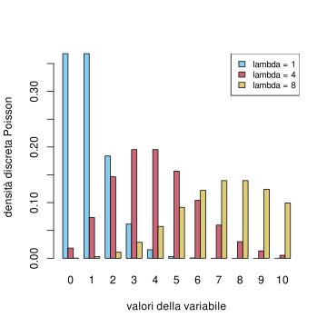
Grafico a barre della densità Poisson fino a \(k=10\), con parametri \(\lambda=1,4,8\).
La densità discreta permette di conoscere tutta la legge di \(X\) (sempre nel cason in cui i possibili valori \(E\) siano un insieme finito oppure infinito ma “discreto”): si tratta di una semplice conseguenza della regola della somma, e per il caso infinito, di un passaggio al limite (appoggiandosi alla teoria di Kolmogorov per renderlo rigoroso).
Se \(X\) assume valori in un insieme \(E\) finito oppure infinito discreto, vale per ogni \(U \subseteq E\), \[ P(X \in U|I) = \sum_{x \in U} P(X = x |I),\] dove la sommatoria è intesa come serie nel caso infinito.
La probabilità che una variabile Binomiale di parametri \(n=7\), \(p=1/6\) assuma valori pari, si ottiene ponendo \(U = \cur{0,2,4,6}\), e pertanto vale (non indichiamo \(I\)) \[ \begin{split} P(X=0)+P(X=2)+ P(X=4)+P(X=6) & = \sum_{k=0}^3 P(X = 2k)\\
& = \sum_{k=0}^3 {7 \choose 2k} \bra{\frac 1 3}^{2k} \bra{\frac 2 3 }^{7 - 2k},\end{split}\] che vale circa il \(53\%\), come mostra il seguente codice R.
# crea il vettore con i valori richiesti pari <-2*(0:3)# calcola la densità discreta nei valori richiestidens_pari <-dbinom(pari, 7, 1/6)# somma le densità trovate per trovare la probabilità richiesta(prob_pari <-sum(dens_pari))
[1] 0.5292638
Possiamo anche evidenziare nel grafico a barre i valori della variabile \(X\) che contribuiscono a determinare la probabilità richiesta (che risulta quindi la somma delle altezze delle barre evidenziate).
# usiamo la funzione dbinom() per ottenere direttamente la densità binomiale con i parametri cercatin <-7k <-0:np <-1/6dens <-dbinom(k, n, p)# parametri per il plot: coloriamo di rosso le probabilità relative agli esiti parivalori <-as.character(k)colori <-c(miei_colori[2], rep(miei_colori[1:2], 3))barplot( dens, col=colori, names.arg=valori, ylab="probabilità", xlab="valore")
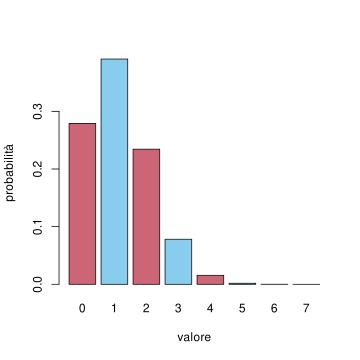
rappresentazione grafica della probabilità che una variabile con densità binomiale di parametri \(n=7\), \(p=1/10\) assuma un valore pari
3.2.2 Densità continua
Un problema sorge quando si vuole trattare il caso di un infinito “continuo”, come ad esempio un intervallo dei numeri reali. L’interesse per questo caso è che alcune grandezze si rappresentano meglio come un “continuo” di valori (si pensi alla temperatura di un oggetto, la velocità di un mezzo, ecc.), e inoltre questo permetterebbe l’uso di tecniche di calcolo (derivate, integrali, ecc.).
Per dare un’esempio concreto, supponiamo di voler definire una variabile \(X\) “uniforme” su tutti i valori dell’intervallo \([0,1]\): ad esempio, \(\cur{X = x}\) potrebbe rappresentare l’informazione che un’urna contiene una frazione \(x\) di palline rosse sul totale. Si tratta ovviamente di una idealizzazione e si può pensare come il limite della densità discreta uniforme sugli \(n\) valori \(\cur{1/n, 2/n, \ldots, 1}\) per \(n\) che tende ad infinito. Il passaggio al limite però è piuttosto tecnico, quindi vorremmo direttamente definire un analogo continuo della densità uniforme. Notiamo tuttavia che non possiamo definire \[ P(X = x | I) = c \] per nessun valore \(c>0\), altrimenti sommando sugli infiniti valori possibili, la serie diverge: \[ \sum_{x \in [0,1]} c = \infty.\] L’idea informale è quindi che ogni alternativa \(\cur{X =x}\) ha una quantità infinitesima di probabilità, un po’ come in una catena ogni anello contribuisce alla massa totale. Per rendere preciso questo concetto, introduciamo una funzione di densità continua di probabilità, che denoteremo ad esempio \[ p(X = x | I)\] che va intesa come la quantità di probabilità per unità di lunghezza (allo stesso modo come la densità di massa o la densità di carica in fisica). Dato un intervallo \([x, x + \Delta x]\) di lunghezza \(\Delta x\) molto piccola, si potrà approssimare \[ P(X \in [x, x + \Delta x] | I ) \sim p(X = x | I) \Delta x.\]
Diamo allora una definizione rigorosa.
Sia \(X\) una variabile aleatoria a valori in \(\R\) e sia \(f: \R \to [0, \infty)\) una funzione integrabile nel senso di Riemann, eventualmente improprio, tale che \[ \int_{-\infty}^\infty f(x) d x = 1.\] Si dice che \(X\) ha densità continua4\(f\) (rispetto all’informazione \(I\)) se vale, per ogni intervallo \((a,b) \subseteq \R\), \[ P( a < X < b | I) = \int_a^b f(x) d x,\]
Ricordando l’interpretazione dell’integrale come area sotto il grafico di \(f\), segue che l’area sottesa dal grafico su tutta la retta reale vale \(1\), mentre la probabilità che \(X\) assuma valori nell’intervallo \((a,b)\) è l’area sotto il grafico ristretto all’intervallo.
# plottiamo la densità f(x) = 3/4( 1-x^2) su (-1, 1) e nulla fuori dall'intervallo.deltax <-0.01x <-seq(-1, 1, by=deltax)dens <- (1- x^2)*3/4plot(x, dens, type='l', xlab='valori', ylab='densità continua', lwd=3, col=miei_colori[2])# evidenziamo l'area sotto il grafico nell'intervallo (-1/2, 0)polygon( c(x[50:100], x[100], x[50]), c(dens[50:100], 0, 0), col=miei_colori[1] )
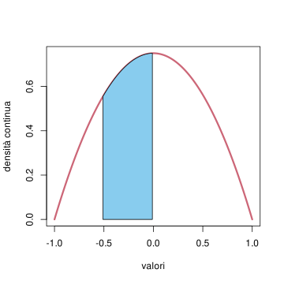
Una densità continua è tale che l’area sotto il grafico valga \(1\), mentre la probabilità che assuma valori in un intervallo è uguale all’area (in azzurro) sotto il grafico ristretto all’intervallo
Osservazione. Nonostante il nome, non è richiesto che \(f\) sia una funzione continua (anche se in molti casi interessanti lo è). Ad esempio può presentare delle discontinuità a salto, che comunque non danno problemi nel calcolo dell’integrale.
Spesso si dice anche che \(X\) è una variabile aleatoria continua, per dire che \(X\) ammette una densità continua. Si può mostrare che, se \(X\) ammette densità continua, la funzione \(f\) è quasi del tutto determinata (eccetto al più in pochi punti, in modo da non modificare gli integrali). Si può quindi introdurre una notazione per identificare tale \(f\). Il problema purtroppo è che non vi è un’unica convenzione per indicare la densità, ad esempio in alcuni testi si trova \(f_X\), in altri \(p_X(x)\) oppure semplicemente \(p(x)\) (usando la variabile matematica, non aleatoria, \(x\) per ricordare che è la densità della variabile aleatoria \(X\)). Inoltre in molte notazioni non è indicata l’informazione \(I\) (spesso perché e fissata). In questo caso conviene sempre chiedere precisazioni su una notazione, se non è chiara. Noi adotteremo la seguente notazione: \[ p(X = x |I), \] dove l’unica differenza è la \(p\) minuscola rispetto alla \(P\) maiuscola di probabilità. Pertanto la formula che definisce la densità di \(X\) si riscrive come \[ P( a< X< b|I) = \int_a^b p(X=x|I) d x.\]
Una variabile \(X\) che ammette densità continua \(p(X=x|I)\) necessariamente è tale che \(P(X=x|I) = 0\) per ogni \(x \in \R\) (ossia ha densità discreta nulla), perché prendendo un intervallo \((a,b)\) contenente \(x\), si ha per monotonia \[ P(X = x | I) \le P(a<X<b | I ) = \int_a^b p(X=x|I) d x,\] e al tendere di \(a, b \to x\) l’integrale tende a zero.
Osservazione. L’analogia con il caso discreto è quindi che l’integrale sostituisce la somma, tuttavia vale la pena di notare che, dovendo attribuire una “unità di misura” alla densità di probabilità, essa sarebbe [probabilità]/[unità di misura di \(X\)] (ad esempio metri se \(X\) rappresenta una lunghezza in metri), mentre la probabilità “infinitesima” sarebbe il termine formale \(p(X=x|I)dx\).
Vediamo due esempi.
Dato un intervallo \([a,b] \subseteq \R\), si dice che \(X\) è una variabile uniforme (continua) su \([a,b]\) se ammette densità continua costante sull’intervallo \([a,b]\) e nulla al di fuori di esso. Pertanto, dovendo avere area unitaria, si deduce che \[ p(X=x| \text{uniforme su $[a,b]$}) = \begin{cases} \frac 1 {b-a} & \text{se $x \in [a,b] $}\\ 0 & \text{altrimenti} \end{cases} \] In particolare, se \(b-a<1\) la densità assume valori maggiori di \(1\) (questo fatto è ovviamente possibile, perché la condizione di essere compresa tra \(0\) e \(1\) riguarda la probabilità, non la densità).
#creiamo un grafico vuotoplot(NULL, xlim=c(-1,1), ylim=c(0,3), xlab='valori', ylab='densità continua')# aggiungiamo i segmenti con il comando lineslines( x=c(-1, 0), y=c(0,0), col=miei_colori[2], lwd=3)lines( x=c(0, 1/3), y=c(3,3), col=miei_colori[2], lwd=3)lines( x=c(1/3, 1), y=c(0,0), col=miei_colori[2], lwd=3)# aggiungiamo dei segmenti tratteggiati per evidenziare la discontinuitàlines( x=c(1/3, 1/3), y=c(0,3), type='l', lty='dashed', col=miei_colori[2])lines( x=c(0, 0), y=c(0,3), type='l', lty='dashed', col=miei_colori[2])
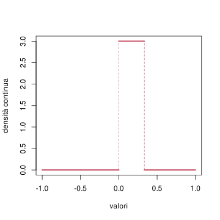
densità uniforme sull’intervallo \([0,1/3]\).
Dato un parametro \(\lambda>0\), si dice che \(X\) a valori in \(\R\) è una variabile con legge esponenziale (con parametro \(\lambda\)) se ammette densità continua proporzionale a \(e^{-\lambda x}\) se \(x \ge 0\) e nulla per \(x<0\) (quindi a tutti gli effetti la variabile assume valori positivi). Pertanto, dovendo avere area unitaria, si deduce che \[ p(X=x| \text{Exp}(\lambda) ) = \begin{cases} \lambda e^{-\lambda x} & \text{se $x \ge 0$}\\
0 & \text{altrimenti.}
\end{cases} \] In particolare, maggiore è \(\lambda\), maggiore è la densità vicino a \(x=0\) (vedere i grafici) e di conseguenza maggiore la probabilità che \(X\) assuma valori piccoli. Vedremo in un senso preciso che \(X\) vale circa (in media) \(1/\lambda\).
#creiamo un grafico vuotoplot(NULL, xlim=c(0,4), ylim=c(0,2), xlab='valori', ylab='densità continua')# aggiungiamo le densità con il comando lines() e la funzione dexp() per calcolare la densità esponenzialedeltax <-0.01x <-seq(0, 4, by=deltax)lines( x, dexp(x, rate=1/2), col=miei_colori[1], lwd=3)lines( x, dexp(x, rate=1), col=miei_colori[2], lwd=3)lines( x, dexp(x, rate=2), col=miei_colori[3], lwd=3)# linea tratteggiata per evidenzare la discontinuità in 0lines( c(0,0), c(0,2), lty='dashed', col='gray')# legendalegend('topright', fill=miei_colori[1:3], legend=c("lambda = 1/2", "lambda = 1", "lambda = 2"), cex=0.8)
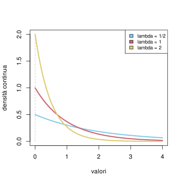
densità esponenziale per \(\lambda = 1/2, 1, 2\)
Quanto introdotto nel caso di variabili a valori in \(\R\) si estende al caso di variabili vettoriali, ossia a valori in uno spazio \(\R^d\) (ad esempio a valori nel piano se \(d=2\)), purché si faccia utilizzo dell’integrazione in più variabili. Nel corso ci soffermeremo solamente su alcuni casi speciali di leggi di variabili vettoriali (in particolare le variabili gaussiane), ma possiamodare qui una definizione generale di densità continua, analoga al caso reale \(d=1\). Non chiederemo comunque mai negli esercizi di calcolare integrali in più variabili.
Sia \(X\) una variabile aleatoria a valori in \(\R^d\) e sia \(f: \R^d \to [0, \infty)\) una funzione integrabile (in più variabili) tale che \[\int_{\R^d} f = \int_{-\infty}^\infty d x_1 \ldots \int_{-\infty}^\infty dx_d \, f(x_1, \ldots, x_d) = 1.\] Si dice che \(X\) ha densità continua \(f\) (rispetto all’informazione \(I\)) se vale, per ogni “rettangolo” \[ U = (a_1,b_1) \times \ldots \times (a_d,b_d) \subseteq \R^d,\]\[ P( X \in U | I) = \int_U f = \int_{a_1}^{b_1} d x_1 \ldots \int_{a_d}^{b_d} dx_d \, f(x_1, \ldots, x_d).\]
Anche in questo caso indicheremo con \[p(X = x | I)\] la densità continua di \(X\), con \(x \in \R^d\) (anch’essa è determinata a meno di modificazioni che non cambiano gli integrali in più variabili). Stavolta però, per guidare l’intuizione, osserviamo che l’unità di misura asociata alla densità è [probabilità]/[volume], se ciascuna coordinata rappresenta una lunghezza (altrimenti un prodotto opportuno delle unità di misura di ciascuna coordinata).
3.2.3 Esercizi
Usando il comando R dbinom() calcolare la probabilità che una variabile aleatoria con densità binomiale di parametri \((15, 1/2)\) assuma valori pari. Ripetere con i parametri \((16, 1/2)\) e \((17, 1/2)\), \((18, 1/2)\). Cosa notate?
Sia \(X\) una variabile aleatoria con densità continua esponenziale di parametro \(\lambda = 3\). Calcolare la probabilità dell’evento \[ \cur{ |X-1| <1/2} \cup \cur{ X^2 >9},\] sia analiticamente sia numericamente con opportuni comandi \(R\) (approssimare eventualmente gli integrali con una somma finita).
Sia \(X\) una variabile con densità continua uniforme su \([a,b] \subseteq \R\), rispetto ad una informazione nota \(I\). Si supponga di osservare che \(X \in [c,d]\), dove \([c,d ]\subseteq [a,b]\). Come cambia la densità di \(X\)?
3.3 Composizione tramite funzione
Sia data \(X\) una variabile aleatoria a valori in \(E\) e sia \(g: E \to F\) una funzione. Per definire la variabile composta \(g(X)\), è sufficiente descrivere il suo sistema di alternative associato. Per ogni \(z \in F\), se vale \(g(X) = z\) significa che \(X\) assume uno dei possibili valori \(x\in E\) tali che \(g(x) = z\). Tale inseme di valori \(x\) è detto immagine inversa di \(z\) tramite \(g\), e si indica \(g^{-1}(z)\). Se \(g\) è invertibile, \(g^{-1}(z)\) consiste di un solo valore, ma in generale individua un sottoinsieme (possibilmente anche vuoto) di \(E\).
Se \(X\) è una variabile aleatoria a valori in \(E\) e \(g: E \to F\) è una funzione, si una definisce la variabile aleatoria \(g(X)\) a valori in \(F\) tramite il sistema di alternative, per \(z \in F\), \[ \cur{ g(X) = z} = \cur{X \in g^{-1}(z)}.\]
Per verificare che la famiglia così definita sia un sistema di alternative, basta notare che, al variare di \(z \in F\), gli insiemi \(g^{-1}(z)\) sono una partizione di \(E\): ogni possibile valore \(x \in E\) appartiene ad uno e uno solo di tali insiemi, pertanto una e una sola tra le affermazioni \(\cur{g(X) = z}\) è vera.
Si lancia un dado a sei facce e si pone \(X \in E= \cur{1,2,3,4,5,6}\) l’esito del lancio. Posta \(g(x)\) la funzione che vale \(1\) se \(x\) è dispari, \(0\) altrimenti, la variabile \(g(X)\) a valori in \(F=\cur{0,1}\) indica se l’esito del lancio è dispari. In particolare, prima di sapere l’esito del lancio, ha densità discreta uniforme (oppure Bernoulli di parametro \(1/2\)), perché \[ \cur{ g(X) =1 } = \cur{ X \in g^{-1}(1)} = \cur{ X = 1 \text{oppure} X=3 \text{oppure} X =5}.\] che ha probabilità \(1/2\).
L’esempio sopra ci indica un metodo per calcolare la densità discreta di \(g(X)\) (qualora abbia senso farlo, ossia l’insieme dei possibili valori di \(g(X)\) è finito o infinito ma discreto). Per ogni \(z \in F\), si tratta di calcolare \[ \cur{ g(X) = z } = \cur{X \in g^{-1}(z)}.\] A questo punto, se anche \(X\) ha densità discreta, basterà sommare sui valori \(x \in g^{-1}(z)\), ossia gli \(x \in E\) tali che \(g(x) = z\) e si ottiene \[ P( g(X) = z |I) = \sum_{x \in g^{-1}(z)} P(X = x | I). \] Altrimenti, nel caso in cui \(X\) abbia densità continua, bisogna sostituire la somma con un integrale (o più in generale con una somma di integrali) sull’insieme \(g^{-1}(z)\): \[ P(g(X) = z | I) = \int_{g^{-1}(z)} p(X=x|I) dx.\]
Sia \(X\) una variabile continua con densità esponenziale di parametro \(\lambda=1\) (rispetto ad una informazione \(I\)). Si consideri la funzione \(g(x)\) che vale \(1\) se \(X\) è minore di \(1\) oppure maggiore di \(2\), e si ponga \(g(x)=0\) altrimenti. Allora la variabile \(g(X)\) assume solo i valori \(\cur{0,1}\), e quindi è discreta. Per calcolarne la densità discreta basta determinare \[\begin{split} P( g(X) = 1 | I) &= P( X \in g^{-1}(1)|I) = P(X<1 \text{ oppure } X >2 |I) \\
& = P(X<1|I) + P(X>2|I) =\int_0^1 e^{-x}dx + \int_2^\infty e^{-x }dx \\
& = 1-e^{-1} + e^{-2}
\end{split}
\]
# plottiamo la densità esponenziale deltax <-0.01x <-seq(0, 5, by=deltax)dens <-dexp(x)plot(x, dens, type='l', xlab='valori', ylab='densità continua', lwd=3, col=miei_colori[2])# evidenziamo l'area sotto il grafico nell'intervallo (0, 1) e nell'intervallo (2, 5) (per ragioni di spazio non possiamo andare oltre)polygon( c(x[x<1], x[x==1], x[1]), c(dens[x<1], 0, 0), col=miei_colori[1])polygon( c(x[x>=2], x[x==5], x[x==2]), c(dens[x>=2], 0, 0), col=miei_colori[1])
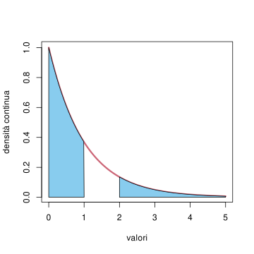
La probabilità di \(\cur{ g(X) =1 }\) corrisponde all’area del sottografico della densità esponeziale negli intervalli \(g^{-1}(1) = (0,1) \cup (2, \infty)\).
# e la confrontiamola con quella teorica(prob_teorica =1-exp(-1)+exp(-2))
[1] 0.7674558
Quando accade invece che, se \(X\) ha densità continua, anche \(g(X)\) ammette densità continua? Sicuramente \(g\) deve assumere un infinità continua di valori, tuttavia non è sufficiente, come mostra il seguente esempio.
Sia \(X\) una varibile continua uniforme nell’intervallo \([-1,1]\) e sia \(g: \R \to \R\) definita a tratti \[ g(x) = \begin{cases} x & \text{se $x \ge 0$,}\\
0 & text{altrimenti.}\end{cases}\]
x <-seq(-2, 2)plot(NULL, xlim=c(-2,2), ylim=c(0,2), xlab='valori', ylab='densità e g(x)')# plottiamo la densità uniformelines( x=c(-2, -1), y=c(0,0), lwd=3, col=miei_colori[2])lines( x=c(-1, 1), y=c(1/2,1/2), lwd=3, col=miei_colori[2])lines( x=c(1, 2), y=c(0,0), lwd=3, col=miei_colori[2])lines( x=c(1, 1), y=c(0,1/2), type='l', lty='dashed', col=miei_colori[2])lines( x=c(-1, -1), y=c(0,1/2), type='l', lty='dashed', col=miei_colori[2])# evidenziamo l'area che viene mandata da g nel valore 0polygon( c(0,0,-1,-1), c(0,.5,.5,0), col=miei_colori[1])# plottiamo il grafico di g(x)lines( x=c(-2,0), y=c(0,0), col=miei_colori[3], lwd=3)lines( x=c(0,2), y=c(0,2), col=miei_colori[3], lwd=3)
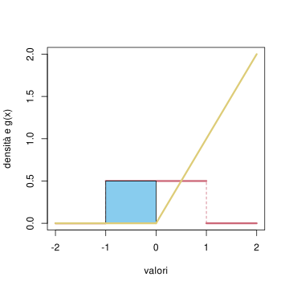
grafico della densità di \(X\) e della funzione \(g(x)\), la probabilità corrispondente all’area in rosso viene assegnata al valore \(0\) da \(g\)
Allora \(g(X)\) non può essere una variabile continua, perché \(g(X) = 0\) se e solo se \(X \in [-1,0]\) che ha probabilità \(1/2\).
Riflettendo su questo esempio, si capisce che il problema sono le regioni in cui il grafico di \(g\) è piatto, ossia \(g'(x)=0\). In effetti questo è l’unico ostacolo (assumendo che \(g\) sia abbastanza regolare) a dedurre che \(g(X)\) ammette densità. Vale infatti la seguente formula di cambio di variabile.
Sia \(X\) una variabile aleatoria a valori in \(\R\), con densità continua \(p(X=x|I)\). Sia \(g: \R \to \R\) una funzione invertibile, derivabile, con derivata continua e mai nulla \(g'(x)\neq 0\). Allora \(g(X)\) ammmette densità continua e vale \[ p(g(X) = z | I) = p( X = g^{-1}(z) |I) \cdot\frac{1}{|g'(g^{-1}(z))|} \]
Osserviamo che il primo dei due termini a destra è piuttosto intuitivo: si valuta la densità nell’unico punto \(x = g^{-1}(z)\) che viene mandato da \(g\) in \(z\). Il secondo termine invece si spiega ricordando che la densità continua ha l’unità di misura [probabilità]/[lunghezza] e quindi ad esempio se \(X\) è espressa in metri e \(g\) è un cambio di unità di misura (ad esempio da metri a kilometri), \(g' = dg/dx\) ha l’unità di misura [Km]/[m] e quindi la densità di \(g(X)\) ha l’unità di misura corretta. Inoltre osserviamo che essendo \(g'\) a denominatore ritroviamo esattamente il fatto che le regioni “piatte” o quasi piatte del grafico di \(g\) (ossia con \(g'\) piccola) danno un contributo grande alla densità di \(g(X)\), e nel limite \(g'=0\) si esce dal caso di densità continua. Notiamo infine che il valore assoluto \(|g'|\) evita (giustamente) densità negative.
Dimostrazione. La dimostrazione della formula sopra segue direttamente da un cambio di variabile nell’integrale. Supponiamo che \(g'(x)>0\) per ogni \(x \in \R\), ossia che \(g\) sia crescente (l’altro caso è analogo). Dato un intervallo \([a,b]\), si ha (sottointendiamo \(I\)) \[\begin{split} P( a < g(X) < b ) &= P( g^{-1}(a) < X < g^{-1}(b))\\
& = \int_{g^{-1}(a)}^{g^{-1}(b)} p(X = x) dx \\
& \text{[posto $g(x) = z$]} \int_a^b p(X = g^{-1}(z)) (g^{-1})'(z) d z
\end{split}\] e la conclusione regue ricordando la formula per la derivata della funzione inversa: \[ (g^{-1})'(z) = \frac{1}{|g'(g^{-1}(z))|}.\]
Consideriamo una variabile \(X\) con densità esponenziale di parametro \(\lambda\) e sia \(g(x) = a x\), dove \(a>0\) è un altro parametro (noto). Allora si trova \(g'(x) = a\), \(g^{-1}(z) = z/a\) e quindi la densità di \(g(X) = aX\) è \[ p( aX = z ) = p(X = z/a) \frac{1}{a} = \begin{cases} \frac{\lambda}{a} e^{-(\lambda/a) z} & \text{per $z \ge 0$,}\\
0 & \text{altrimenti.}
\end{cases}\] e riconosciamo quindi una densità esponenziale di parametro modificato \(\lambda/a\).
Più in generale, se \(X\) assume con probabilità \(1\) valori in un intervallo \(E \subseteq \R\) e \(g:E \to \R\) è tale che si può decomporre \(E\) in una unione finita di intervalli a due a due disgiunti in cui, all’interno di ciascun intervallo, \(g\) sia invertibile, derivabile con derivata continua e mai nulla \(g'(x) \neq 0\). Allora \(g(X)\) ammette densità continua \[ p(g(X) = z | I ) = \sum_{ x \in g^{-1}(z)} p( X =x | I ) \cdot \frac{1}{|g'(x)|}.\] Notiamo che questa formula vale in tutti i valori \(z \in g(E)\) eccetto al più quelli che sono immagine tramite \(g\) di un estremo degli intervalli (dove la derivata \(g'\) potrebbe essere nulla oppure proprio non esistere).
Consideriamo una variabile \(X\) con densità esponenziale di parametro \(1\) e sia \(g(x) =\log(x)\), che non è definita su tutto \(\R\), ma essendo \(P(X \le 0) = 0\), possiamo ridurci a \(E = (0, \infty)\), dove risulta invertibile con derivata \(g^{-1}(z)= e^z\) e derivabile con derivata \(\log'(x) = 1/x\) non nulla. Troviamo quindi la densità di \(g(X) = \log(X)\), per \(z \in \R\), \[ p( \log(X) = z ) = p( x = e^z) e^z = e^{-e^z + z}.\]
Sia \(X\) una variabile continua con densità uniforme sull’intervallo \([-1,1]\) e sia \(g(x)= x^2\). In questo caso possiamo decomporre l’intervallo \(E = [-1,1]\) in nei due intervalli \([-1,0]\) e \((0,1]\) disgiunti, in cui \(g(x)\) è invertibile e si trova, per \(z \in [0,1]\), \(g^{-1}(z)=\pm\sqrt{z}\) con il segno determinato dall’intervallo che consideriamo. La funzione \(g\) è derivabile ovunque, ma la derivata $g’(x)= 2x $ è nulla in \(0\). Dovremo quindi escludere \(g(0) = 0\) dalla formula per la densità (altrimenti si trova un contributo che possiamo intepretare come \(1/0 = \infty\)). Applicando quindi la formula generalizzata, vale per \(z \in g(E) = [0,1]\), \(z \neq g(0) = 0\), \[ p( X^2 = z) = p( X = -\sqrt{z}) \cdot \frac{1}{2 \sqrt{z}}+ p( X = \sqrt{z}) \cdot \frac{1}{2 \sqrt{z}} = \frac{1}{2 \sqrt{z}},\] mentre in tutti gli altri \(z\) si ha \(p(X^2 = z) = 0\).
Si può sempre controllare (è bene farlo in casi complicati come questo) che \[\int_{-\infty}^\infty p(g(X)= z) d z = 1,\] che in questo caso diventa l’identità \[ \int_0^1 \frac{1}{2 \sqrt{z}} d z = 1.\]
Questa formula permette di determinare la densità di \(g(X)\) nel caso di variabili a valori in \(\R\), ma esistono formule analoghe nel caso vettoriale, per funzioni \(g:\R^d \to \R^k\) e \(k \le d\). Non faremo uso negli esercizi di queste formule e menzioniamo solamente il caso speciale di \(k=d\), analogo al teorema visto sopra nel caso \(d=1\). Ricordiamo che una funzione \(g = (g_1, g_2,\ldots, g_d)= \R^d \to \R^d\) è derivabile se ammette in ogni punto un’approssimazione lineare (al primo ordine) tramite la matrice \(d\times d\), detta Jacobiana, delle derivate parziali di \(g\), \[ Dg(x) = \bra{\frac{\partial g_i}{\partial x_j}(x)}_{i,j=1, \ldots, d}.\]
Sia \(X\) una variabile aleatoria vettoriale, a valori in \(\R^d\), con densità continua \(p(X=x|I)\). Sia \(g: \R^d \to \R^d\) una funzione invertibile, derivabile con derivata continua e invertibile in ogni punto, ossia \[ \det \bra{ \bra{\frac {\partial g_j(x)}{\partial x_i} }_{i,j=1, \ldots, d}} \neq 0, \quad \text{per ogni $x \in \R^d$.}\] Allora \(g(X)\) ammmette densità continua e vale \[ p(g(X) = z | I) = p( X = g^{-1}(z) |I) \cdot\frac{1}{|\det(Dg)(g^{-1}(z))|} \]
Notiamo ancora che le “unità di misura” sono rispettate essendo \(\det(Dg)\) prodotto di \(d\) termini del tipo \(dg_j/dx_i\).
Sia \(g(x ) = Ax +b\) una trasformazione affine, ossia \(A \in \R^{d\times d}\) e \(b \in \R^d\) fissati (e noti, osserviamo in particolare che \(A\) indica una matrice, non una variabile aleatoria). Allora si sa che \(Dg(x)= A\), e quindi se \(A\) è invertibile tutte le condizioni del teorema sono soddisfatte, perciò data \(X\) a valori in \(\R^d\) con densità continua, anche \(g(X) = AX+b\) ammette densità data da \[ p( AX +b = z ) = p( X = A^{-1}(z-b)) \frac{1}{|\det(A)|}.\] Per fare un esempio più concreto, se la densità di \(X\) è una funzione radiale, ossia della distanza dall’origine \(p(X = x) = f(|x|)\), allora la formula sopra mostra che la densità non cambia se si applicano rotazioni (o più in generale una trasformazione ortogonale, \(A^T A = Id\)).
3.3.1 Esercizi
Sia \(X\) una variabile con densità discreta binomiale di parametri \((30, 1/3)\). Calcolare analiticamente e poi numericamente (usando opportuni comandi R) la densità discreta della variabile \(Y = (X-10)^2\).
Sia \(X\) una variabile con densità continua uniforme su \([0,1]\). Determinare la densità (continua o discreta?) di \(aX+b\), dove \(a\), \(b \in \R\) sono parametri (da ritenere noti).
Sia \(X\) una variabile con densità continua esponenziale di parametro \(\lambda= 3\). Determinare la densità di \(X^2\) e più in generale di \(X^p\), dove \(p \neq 0\) è un parametro (da ritenere noto).
3.4 Variabile congiunta
Date due variabili aleatorie \(X \in E\), \(Y \in F\), volendo applicare una funzione della coppia \(g(x,y)\) per definire una variabile aleatoria composta \(g(X,Y)\), ci troviamo di fronte al seguente problema: come è definita la variabile congiunta\((X,Y)\) a valori nelle coppie ordinate \((x,y) \in E\times F\)?
La risposta è molto naturale.
Se \(X \in E\), \(Y \in F\) sono variabili aleatorie associate ai sistemi di alternative \((\cur{X=x})_{x \in E}\), \((\cur{Y = y})_{y \in F}\), si definisce la variabile aleatoria congiunta\((X,Y)\) a valori in \(E \times F\) tramite il sistema di alternative \[ \cur{ (X,Y) = (x,y)} = \cur{X =x,Y=y} = \cur{X=x} \text{ e } \cur{Y = y}.\]
Si può dare una rappresentazione grafica mediante diagrammi di Venn, ricordando che un sistema di alternative individua una partizione dell’“universo” corrispondente all’informazione nota \(I\): le alternative relative alla variabile \(X\) sono “strisce” verticali, mentre quelle relative alla \(Y\) sono orizzontali, e ogni casella della “scacchiera” così ottenuta rappresenta un’alternativa associata alla variabile congiunta \((X,Y)\).
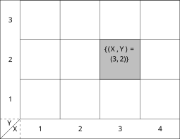
Rappresentazione del sistema di alternative associato alla variabile congiunta \((X,Y)\), in grigio l’evento \((X,Y)= (3,2)\).
In questa costruzione, le variabili \(X\), \(Y\) (considerate separatamente) sono dette marginali della variabile congiunta \((X,Y)\). La domanda principale cui cerchiamo di rispondere è la seguente: come determinare la legge della variabile congiunta?
Cominciamo da un fatto più semplice: dalla legge congiunta è sempre possibile ottenere le leggi delle marginali, tramite composizione di opportune funzioni di proiezione. In particolare, la variabile \(X\) è ottenibile tramite la funzione \[ g: E\times F \to E, \quad (x,y) \mapsto x.\] Pertanto, se la variabile congiunta \((X,Y)\) ammette densità discreta, si ottiene che la densità discreta di \(X\) in \(x \in E\) è data dalla somma su tutti i possibili valori in \(g^{-1}(x)\), ossia le coppie del tipo \((x,y)\), al variare di \(y \in F\). Troviamo quindi \[ P(X = x|I) = \sum_{y \in F} P(X=x, Y=y|I) =\sum_{y \in F} P( (X,Y) =(x, y) |I).\]
Similmente, si trova \[ P(Y = y | I) = \sum_{x \in E} P( (X,Y) = (x,y) |I).\]
Per trattare il caso di una variabile congiunta \((X,Y)\) con densità continua, dobbiamo richiedere che \(E = \R^{d}\), \(F = \R^{k}\) in modo che \(E\times F = \R^{d+k}\). Supponendo che la variabile congiunta \((X,Y)\) ammetta densità continua \(p((X,Y) = (x,y)|I)\), con \(x \in \R^d\), \(y\in \R^k\), si può mostrare (usando la definizione che abbiamo dato) che la densità delle marginali si trova integrando sulle variabil “libere”: per la densità di \(X\), si ha \[ p(X = x | I) = \int_{\R^k} p( (X,Y)= (x,y) |I) d y,\] mentre \[ p(Y = y | I) = \int_{\R^d} p( (X,Y) = (x,y) |I) d x,\] avendo usato una notazione compatta per l’integrale in più variabili.
La domanda successiva è quindi se la conoscenza delle leggi delle variabili \(X\) e \(Y\) (separatamente) sia sufficiente per determinare la legge della variabile congiunta. Si vede immediatamente che questo è falso, considerando il seguente esempio di estrazioni dall’urna.
Sia data un’urna contenente al solito \(N\) palline di cui \(R\) rosse e \(B\) blu (parametri noti). Si consideri una variabile \(X \in \cur{0,1}\) che indica se nella prima estrazione la pallina estratta è rossa, e una seconda variabile \(Y \in \cur{0,1}\) che indica se nella seconda estrazione la pallina è rossa. Sia che le estrazioni siano con oppure senza rimpiazzo, abbiamo visto nel Capitolo Capitolo 2 che \[ P(X = 1 | \Omega) = P(Y = 1 | \Omega ) = \frac{R}{N}.\] Tuttavia, se le estrazioni sono senza rimpiazzo, vale \[\begin{split} P((X,Y) = (1,1) |\Omega) & = P(X = 1 |\Omega) P(Y = 1 | X=1) \\
& = \frac{R}{N} \cdot \frac{R-1}{N-1},\end{split}\] mentre se sono con rimpiazzo, per indipendenza vale \[ \begin{split} P((X,Y) = (1,1) |\Omega) &= P(X = 1 |\Omega) P(Y = 1 | X=1) =P(X = 1 |\Omega) P(Y = 1 | \Omega) \\
& = \frac{R}{N} \cdot \frac{R}{N}.
\end{split}\]
Prima di concludere questa sezione, osserviamo che la costruzione introdotta si estende al caso di un numero qualsiasi (finito) \(k\) variabili aleatorie \(X_1\in E_1\), …, \(X_k \in E_k\). La variabile congiunta \(X = (X_1, \ldots, X_k)\) è a valori nelle \(k\)-uple ordinate \[x = (x_1, \ldots, x_k) \in E_1 \times \ldots \times E_k\] ed è definita tramite il sistema di alternative \[\begin{split} \cur{ X = x} & = \cur{X_1 = x_1, X_2=x_2, \ldots, X_k = x_k} \\
& = \cur{X_1 = x_1} \text{ e } \ldots \cur{X_k = x_k}.\end{split}\] Per ottenere le leggi marginali, o più in generale la legge di una variabile congiunta \((X_i)_{i \in I}\) per un sottoinsieme di indici \(I \subseteq \cur{1, \ldots, k}\), è sufficiente sommare (o integrare) la densità della variabile congiunta rispetto alle variabili “libere”, ossia associate agli indici nel complementare di \(I\).
3.4.1 Esercizi
Dare un esempio di due leggi marginali entrambe su \(E= \cur{1,2,3,4}\) tali che esistano (almeno) tre leggi congiunte \(E\times E\) diverse con tali leggi marginali.
Nel modello dell’estrazione dall’urna senza rimpiazzo, considerare variabili aleatorie \(X_1\), \(X_2\), , \(X_5\) a valori in \(E = \cur{R, B}\) rappresentanti l’esito della prima, seconda, ecc. estrazione. Scrivere esplicitamente la densità discreta congiunta di \(X=(X_1, X_2, \ldots, X_5)\) e le densità marginali.
3.5 Formula di Bayes per variabili aleatorie
Abbiamo visto che la densità di una variabile congiunta non è esprimibile in termini delle due densità marginali (rispetto all’informazione nota \(I\)). Un modo per aggirare questo problema è fornito dalla regola del prodotto, che garantisce (evitiamo di scrivere \(I\) per semplicità) \[ P( (X,Y) = (x,y)) = P(X=x \text{ e } Y = y ) = P(X=x) P(Y=y | X=x).\] Possiamo leggere questa identità nel seguente modo: nel caso di variabili discrete, la densità della variabile congiunta è determinata da 1. La densità della marginale \(X\) 2. La densità della marginale \(Y\), ma condizionata all’informazione \(X=x\) per ciascun \(x \in E\) (che si abbrevia dicendo semplicemente condizionata ad \(X\)).
In pratica in molti casi la legge congiunta è proprio definita tramite queste due quantità (la densità di una marginale e la densità dell’altra marginale condizionata alla prima).
Nel caso delle due estrazioni dall’urna la densità congiunta della prima e della seconda estrazione è definita nell’ordine naturale, partendo dalla prima estrazione e poi specificando la densità della seconda condizionata alla prima (e distinguendo quindi tra estrazioni con e senza rimpiazzo). Ovviamente nulla vieta di considerare anche altre densità condizionate, ad esempio invece di aggiungere la stessa pallina si potrebbe sostituire la pallina estratta con una dell’altro colore. In tal caso, ponendo come nella sezione precedente \(X\) la variabile indicatrice della prima estrazione (\(1\) se è rossa), \(Y\) invece relativa alla seconda estrazione, si trova \[ P(Y =1 | X=1) = \frac{R-1}{N}, \quad P(Y =1 | X=0) = \frac{R+1}{N},\] che permette di definire una ulteriore densità congiunta per la variabile \((X,Y)\) (ovviamente densità congiunte diverse servono a descrivere situazioni diverse).
La formula di Bayes si può quindi riscrivere in termini di variabili aleatorie, ottenendo \[ P(X=x | Y =y ) = P(X=x) \cdot \frac{ P(Y=y | X=x)}{P(Y=y)} \propto P(X=x)L(X=x; Y=y),\] con la stessa inteprertazione del caso di sistemi di alternative (è in effetti solamente un cambio di notazione). Ricordiamo che il rapporto \[ \frac{ P(Y=y | X=x)}{P(Y=y)} = \frac{ P(X=x | Y=y)}{P(X=x)}\] non cambia se si scambiano i ruoli di \(X=x\) ed \(Y=y\), e indica quando l’osservazione di uno dei due eventi aumenti (se maggiore di \(1\)), diminuisca (se minore di \(1\)) il grado di fiducia nell’altro evento. Come nel caso delle alternative, in molti casi si è semplicemente interessati al valore più probabile della \(X\), avendo osservato \(Y=y\). Si definisce pertanto la stima di massimo a posteriori per la \(X\), avendo osservato \(y=y\), come il valore (o i valori) \[ x_{\map} \in \arg \max \cur{ P(X=x) L(X=x; Y=y) : x \in E}\] e ricordiamo che nel caso di \(X\) con densità uniforme discreta su \(E\) (rispetto all’informazione iniziale) il problema si riduce alla stima di massima verosimiglianza \[ x_{\mle} \in \arg \max \cur{L(X=x; Y=y) : x \in E}.\] In molte situazioni in cui \(E\) sia infinito, per estensione dal caso finito si considera il problema sopra (immaginando una distribuzione a priori uniforme su \(E\), che rigorosamente non esiste, ma è comunque utile). Vediamo un esempio
Si consideri la seguente situazione: si informa il robot che un’urna contiene metà palline rosse e metà palline blu, da cui si effettuano un certo numero di estrazioni con rimpiazzo. Il robot tuttavia non viene informato del numero esatto delle estrazioni, ma si comunica al robot solamente che il numero di palline rosse estratte è \(10\). Possiamo stimare il numero di estrazione effettuate? intuitivamente, la risposta dovrebbe essere \(20\), ma vediamo come il robot può ragionare.
Definiamo una variabile aleatoria \(M\) che indica il numero di estrazioni effettuate. Non sapendo nulla su \(M\) (prima di ricevere l’informazione che \(10\) rosse sono state estratte), il robot suppone che sia uniformemente distribuita sui valori \(\cur{0,1, \ldots, \bar{m}}\), per un parametro \(\bar{m}\) molto grande (idealmente infinito), \[ P(M=m|\Omega) = \frac {1}{\bar{m}}\] per \(m \le \bar{m}\). Nel definire la densità del numero di rosse estratte sapendo \(M = m\), il robot utilizza la densità binomiale di parametri \((m,1/2)\) (perché sa che metà palline sono rosse e metà blu). Pertanto, posta \(N_R\) la variabile che indica il numero di palline rosse estratte, si ha \[ P( N_R = k | M=m) = {m\choose k} \bra{ \frac{1}{2}}^k \bra{\frac 1 2 }^{m-k} = {m \choose k} \frac {1}{2^m}.\] La formula di Bayes permette di ottenere la densità di \(M\) avendo osservato \(N_R = 10\), per \(m \le \bar{m}\), \[ P( M=m| N_R = k) = P(M=m|\Omega)\cdot \frac{P(N_R = 10| M=m)}{P(N_R = 10|\Omega)} = \frac{1}{\bar{m}} {m \choose k} \frac {1}{2^m} \cdot \frac{1}{P(N_R = 10|\Omega)}.\] Un’espressione per \(P(R_R|\Omega)\) si ottiene imponendo che l’ultimo termine sia una densità discreta (oppure tramite la formula di disintegrazione) \[P(N_R|\Omega) = \sum_{m=0}^{\bar{m}} \frac{1}{\bar{m}} {m \choose k} \frac {1}{2^m}.\] Ora non vale più la pena di proseguire con i calcoli teorici, piuttosto è meglio plottare la densità e studiare come dipenda dal parametro \(\bar{m}\).
# introduciamo due possibili parametri (si consiglia di ripetere con altri valori)possibili_bar_m <-c(25, 50)#Inizializziamo una matrice che conterrà le densità al variare del parametro bar_m (utile il barplot).dens_matrice_M_NR_10 <-matrix( 0, nrow=2, ncol=50)# dovendo ripetere gli stessi calcoli al variare di bar_m, utilizziamo un ciclo forfor (iter in1:2){ bar_m <- possibili_bar_m[iter] m <-0:bar_m# scriviamo la verosimiglianza likelihood <-dbinom(10, m, 1/2)# la densità discreta di M avendo osservato N_R = 10 si ottiene moltiplicando la densità a priori (che è costante uguale a 1/bar_m,) e normalizzando in modo che sommi ad 1 -- quindi non serve neppure moltiplicare per 1/bar_m, ma lo facciamo per chiarezza dens_M_NR_10 <- likelihood/bar_m dens_M_NR_10 <- dens_M_NR_10/sum(dens_M_NR_10) dens_matrice_M_NR_10[iter,] <- dens_M_NR_10[1:50]}colori <- miei_colori[1:2]barplot(dens_matrice_M_NR_10, beside=TRUE, col=colori, names.arg =as.character(0:49), xlab='numero estrazioni', ylab='densità discreta')# aggiungiamo una legendalegend('topright', legend=c('bar_m = 25', 'bar_m = 50'), fill=colori)
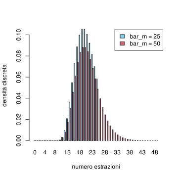
grafico della densità discreta di \(M\) sapendo \(N_R=10\), al variare del parametro \(\bar{m}\)
Osserviamo che se \(\bar{m}\) è piccolo, la densità di \(M\) varia abbastanza, tuttavia al crescere di \(\bar{m}\) si stabilizza in un opportuno profilo. Pertanto il risultato non dipende essenzialmente da \(\bar{m}\) (che si può anche mandare all’infinito, per essere formali).
Inoltre, la stima di massima verosimiglianza \(m_{\mle}\) si può ottenere dai calcoli svolti sopra.
# la funzione which.max restituisce l'indice corrispondente al punto di massimo di un vettoreindice_max =which.max(dens_M_NR_10)# di conseguenza m_max si ottiene dalla componente di indice_max del vettore m(m_max = m[indice_max])
[1] 19
# la risposta potrebbe stupirci, ma confrontiamo le probabilità a posterioridens_M_NR_10[indice_max] # per la probabilità che M=19
[1] 0.08809918
dens_M_NR_10[indice_max+1] # per la probabilità che M=20
[1] 0.08809918
Questa costruzione, che è essenzialmente la regola del prodotto e la conseguente formula di Bayes, si estende in diversi modi. Il primo è di considerare variabili continue. In tal caso, per definire la densità continua della congiunta, si deve mostrare una versione della regola del prodotto per le densità, precisamente, per \(X \in \R^d\), \(Y \in \R^k\), \[ p((X,Y)=(x,y) ) = p(X=x, Y=y) = p(X=x) p(Y=y | X=x),\] dove il termine \(p(Y=y|X=x)\) è detto anche densità condizionale di \(Y\) rispetto ad \(X\) ed è la densità della variabile \(Y\) sapendo, oltre all’informazione \(I\) qui non scritta, anche che \(X\) assume il valore \(x\). Il modo più semplice per pensare a questa formula è che sia una definizione della densità della congiunta partendo dalla densità continua di \(X\) e dalla densità di \(Y\) sapendo \(X=x\). Si può anche leggere al contrario, ossia conoscendo la densità della variabile congiunta, si ricava una versione della fomula di Kolmogorov per densità continue \[ p(Y =y | X=x) = \frac{ p(X=x, Y=y)}{p(X=x)}.\]
La costruzione è perfettamente simmetrica, e invertendone l’ordine si ottiene la formula di Bayes per densità continue: \[ p(X=x | Y =y ) = p(X=x) \cdot \frac{ p(Y=y | X=x)}{p(Y=y)} \propto p(X=x) L(X=x; Y=y),\] con la stessa intepretazione che nel caso discreto (eccetto che stiamo trattando densità continue e non probabilità). Per determinare il denominatore, possiamo sempre ricordare che l’integrale della densità a sinistra (come funzione di \(x\)) deve valere \(1\), da cui si trova una formula di disintegrazione per densità continue: \[ p(Y=y) = \int_{\R^d} p(Y=y | X=x) p(X=x)d x = \int_{\R^d} L(X=x; Y=y) p(X=x) dx.\] Analogamente a quanto accadeva nel caso discreto, il rapporto \[ \frac{ p(Y=y | X=x)}{p(Y=y)} = \frac{ p(X=x | Y=y)}{p(X=x)} \] non cambia se si scambiano gli eventi \(Y=y\), \(X=x\). Come nel caso discreto, per determinare l’alternativa \(\cur{X=x}\) più probabile, avendo osservato \(\cur{Y=y}\), è sufficiente trovare il (o i) punti di massimo della funzione \[ x \mapsto p(X=x) L(X=x; Y=y),\] determinando così la stima del massimo a posteriori per \(X\) avendo osservato \(Y=y\).
Osservazione (massima verosimiglianza nel caso continuo). Nel caso in cui \(X\) sia una variabile uniforme (ad esempio, su un intervallo \([a,b]\)), come nel caso discreto il problema di determinare i punti di massimo per la distribuzione condizionata all’osservazione di \(Y\), si riduce a \[ x_{\mle} \in \operatorname{arg}\cur{ \max p(Y=y | X=x): x \in [a,b]}.\] Tale \(x_{\mle}\) è il caso continuo della stima di massima verosimiglianza della variabile \(X\), avendo osservato \(Y=y\). Spesso, si massimizza direttamente al variare di \(x \in \R\) o su un intervallo illimitato, come una semiretta (anche se propriamente non esiste una densità continua uniforme su intervalli illimitati).
Vediamo un esempio di applicazione della formula di Bayes e della stima massima verosimiglianza nel caso continuo. Si vuole modellizare la durata della carica di un dispositivo (ad esempio, uno smartphone, o un drone) tramite una variabile aleatoria \(T\) avente densità continua esponenziale di un certo parametro \(\lambda\). Questo semplice modello contiene il solo parametro \(\lambda\), appunto, che inizialmente possiamo supporre uniformemente distribuito nei valori \([0,1]\) (ad esempio, misurando in giorni, e ricordando che tanto più piccolo è \(\lambda\), maggiori sono i valori assunti da \(T\)). Il robot considera quindi una variabile \(\Lambda\) uniforme continua su \([0,1]\) (rispetto alla informazione iniziale \(\Omega\)). Condizionata a \(\Lambda= \lambda\), \(T\) ha una densità esponenziale di parametro \(\lambda\), \[p(T = t | \Lambda = \lambda) = \lambda e^{-\lambda t } \quad \text{per $t \ge 0$.}\] Avendo osservato che (per un dispositivo) la sua durata è \(T=10\), possiamo ottenere la densità di \(\Lambda\) aggiornata a questa informazione: per \(\lambda \in [0,1]\), \[ p(\Lambda = \lambda| T = 10) = p(\Lambda = \lambda|\Omega) p(T=10 | \Lambda = \lambda) \cdot \frac{1}{p(T=10|\Omega)} = p(T=10 | \Lambda = \lambda) \cdot \frac{1}{p(T=10|\Omega)},\] ricordando l’ipotesi che \(\Lambda\) sia uniforme (rispetto a \(\Omega\)). Per determinare il denominatore esplicitamente, basta imporre che il membro a destra sia una densità continua (rispetto a \(\lambda\)) e quindi integrare ad \(1\). Si trova la formula \[ p(T=10|\Omega) = \int_0^1 \lambda e^{- 10 \lambda } d \lambda.\] Non vale la pena di cercare una espressione in termini di funzioni elementari, ma è più utile tracciarne un grafico approssimato.
delta_lambda <-0.01lambda <-seq(0, 1, by=delta_lambda)# scriviamo la verosimiglianza, ossia P(T=10|Lambda=lambda)likelihood <- lambda*exp(-lambda*10)# otteniamo la distribuzione di Lambda moltiplicando la densità a priori (che vale 1 in questo caso) per la verosimiglianza e normalizzando dividendo per l'integrale approssimato tramite somme di Riemanndens_Lambda_T_10 <- likelihooddens_Lambda_T_10 <- dens_Lambda_T_10/(sum(dens_Lambda_T_10)*delta_lambda)# plottiamo sia la distribuzione a priori (uniforme) che quella condizionataplot(NULL, xlim=c(0,1), ylim=c(0,4), xlab='lambda', ylab='densità')lines(lambda, dunif(lambda), type='l', lwd=3, col=miei_colori[1])lines(lambda, dens_Lambda_T_10, type='l', lwd=3, col=miei_colori[2])# aggiungiamo una legendalegend('topright', legend=c('a priori', 'condizionata a T=10'), fill=miei_colori[1:2])
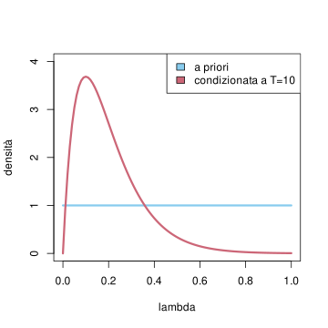
densità per \(\Lambda\): a priori e avendo osservato \(T=10\)
Se si è interessati alla stima di massima verosimiglianza, si determinare \[ \lambda_{\mle} \in \arg \max \cur{ \lambda e^{- 10 \lambda } : \lambda \in [0,1]},\] e in questo caso il problema ha una semplice soluzione analitica. Basta derivare e imporre che la derivata sia nulla, trovando \[ e^{- 10 \lambda } - 10 \lambda e^{-10 \lambda} = 0 \quad \text{ossia} \quad \lambda = 1/10.\] (andrebbe anche verificato che il massimo non sia raggiunto agli estremi dell’intervallo, ma dal grafico sopra è evidente). Per modelli più complicati, si deve ricorrere a metodi numerici per determinare la stima di massima verosimiglianza. Possiamo anche accontentarci del risultato approssimato ottenuto dai valori plottati sopra.
indice_max <-which.max(dens_Lambda_T_10)# per ottenere la stima di massima verosimiglianza basta ottere la componente dal vettore lambdalambda[indice_max]
[1] 0.1
consideri una variabile aleatoria \(\Lambda\) a valori in \([0, 10]\) uniforme (rispetto ad una informazione iniziale \(\Omega\))
Vale la pena di menzionare anche il caso misto, in cui \(X \in E\) ha densità discreta mentre \(Y\), condizionata ad \(\cur{X=x}\), è continua, per ogni \(x \in E\). In tal caso il problema è che in generale la variabile congiunta non ha densità né continua né discreta, tuttavia la formula di Bayes rimane valida, nella forma \[ P(X = x | Y=y ) = P(X =x)\cdot \frac{ p(Y= y| X=x)}{p(Y=y)} \propto P(X=x) L(X=x; Y=y)\] e al solito imponendo che sia una densità discreta e quindi sommi ad \(1\) si trova per il denominatore l’espressione \[ p(Y=y) = \sum_{x \in E} p(Y= y| X=x)P(X =x).\] Vale anche la formula nel caso simmetrico (ossia \(X\in \R^d\) è continua mentre \(Y\), condizionata ad \(\cur{X=x}\) è discreta): \[ p(X=x | Y=y) = p(X=x) \cdot \frac{ P(Y= y| X=x)}{P(Y=y)} \propto p(X=x) L(X=x; Y=y)\] con \[ P(Y=y) = \int_{\R^d} P(Y= y| X=x)p(X =x) dx.\] Anche in questo caso è utile studiare la stima di massimo a posteriori o di massima verosimiglianza per \(X\) avendo osservato \(Y=y\) (non ripetiamo la definizione, che è praticamente la stessa, con le dovute modifiche).
Per fare un esempio di questo caso “misto”, si supponga che il robot sia stato informato che un’urna contiene palline rosse oppure blu, ma non del numero totale né della frazione di palline rosse sul totale. Successivamente viene informato che, avendo effettuato \(10\) estrazioni con rimpiazzo, sono state osservate \(3\) palline rosse. Come stimare la frazione di palline rosse sul totale? Intuitivamente capiamo che la risposta è \(3/10\), ma vediamo come ragiona il robot.
Il robot introduce una variabile aleatoria \(F_R \in [0,1]\) per indicare la frazione di palline rosse. Rispetto alla informazione iniziale (prima di sapere delle \(10\) estrazioni), suppone che abbia densità uniforme continua. Introduce poi la variabile \(N_R\) che indica il numero di palline rosse estratte nelle \(10\) estrazioni. Sapendo \(F_R = r\), \(N_R\) ha densità discreta Binomiale di parametri \(n =10\) (numero di estrazioni) e \(p = r\) (probabilità di estrarre una rossa). Pertanto, per \(k \in \cur{0, \ldots, 10}\), \[ P(N_R = k | F_R = r) = { 10 \choose k} r^k (1-r)^{10-k}.\] Avendo osservato \(N_R =3\), la formula di Bayes (nel caso “misto” discreto e continuo) diventa, per \(r \in [0,1]\), \[ p( F_R = r | N_R = 3) = p(F_R = r|\Omega) \frac{ P(N_R=3 | F_R = r)}{P(N_R = 3|\Omega)} = { 10 \choose 3} r^3 (1-r)^{7} \cdot \frac{1}{P(N_R = 3 | \Omega)},\] icordando che \(p(F_R = r| \Omega) = 1\) (la densità a priori è uniforme). Troviamo anche una espressione per il denominatore – anche se abbiamo capito che per molti aspetti non serve – imponendo che il membro a destra sia una densità continua \[ P(N_R = 3 | \Omega) = \int_0^1 { 10 \choose 3} r^3 (1-r)^{7} d r.\] Si tratta di integrare un polinomio, quindi con un po’ di lavoro (oppure l’uso di un integratore simbolico) si può anche ottenere una formula esplicita. Tuttavia possiamo anche limitarci allo studio numerico.
delta_fr <-0.01fr <-seq(0, 1, by=delta_fr)# scriviamo la verosimiglianzalikelihood <-dbinom(3, 10, fr)# otteniamo la distribuzione di F_R moltiplicando la densità a priori (che vale 1 in questo caso) per la verosimiglianza e normalizzando dividendo per l'integrale approssimato tramite somme di Riemanndens_FR_NR_3 <- likelihooddens_FR_NR_3 <- dens_FR_NR_3/(sum(dens_FR_NR_3)*delta_fr)# plottiamo sia la distribuzione a priori (uniforme) che quella condizionataplot(NULL, xlim=c(0,1), ylim=c(0,3), xlab='frazione di palline rosse', ylab='densità')lines(fr, dunif(fr), type='l', col=miei_colori[1], lwd=3)lines(fr, dens_FR_NR_3, type='l', col=miei_colori[2], lwd=3)# aggiungiamo una legendalegend('topright', legend=c('a priori', 'condizionata a N_R=10'), fill=miei_colori[1:2])
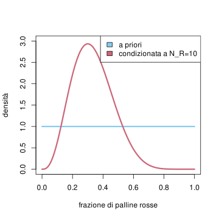
densità continua della frazione di palline rosse a priori e avendo osservato in \(10\) estrazioni con rimpiazzo \(3\) palline rosse
Osserviamo in particolare come la densità si sia accumulata intorno al punto di massima verosimiglianza, che possiamo calcolare numericamente al solito modo:
fr[which.max(dens_FR_NR_3)]
[1] 0.3
che conferma la nostra intuizione. Osserviamo anche che la densità vale \(0\) nei casi estremi \(F_R=0\) oppure \(F_R = 1\): questo riflette il fatto che il robot abbia osservato almeno una pallina rossa e almeno una blu dentro l’urna.
3.5.1 Esercizi
Ripetere gli esempi con densità non uniformi (ad esempio partendo dalle densità a posteriori ottenute)
3.6 Indipendenza
In questa sezione estendiamo il concetto di indipendenza tra sistemi di alternative riformulandolo in termini di variabili aleatorie e delle loro densità (discrete e continue).
La Definizione ?def-indipendenza si traduce immediatamente da sistemi di alternative finiti a variabili aleatorie discrete, nel seguente modo.
Siano \(X_1\in E_1\), \(X_k\in E_k\) variabili aleatorie con densità discreta (rispetto ad una informazione nota \(I\)). Allora esse si dicono indipendenti (condizionatamente ad \(I\)) se vale \[ P( X_1 =x_1, X_2 = x_2, \ldots, X_k=x_k|I) = \prod_{i=1}^k P(X_i = x_i|I),\] per ogni \(x_1 \in E_1\), \(x_2 \in E_2\), …, \(x_k \in E_k\), o equivalentemente, per ogni sottoinsieme \(J \subseteq \cur{1, \ldots, k}\), \[ P( X_j =x_j \text{ per ogni $j \in J$} |I,X_\ell = x_\ell \text{ per ogni $\ell \notin J$} ) = P(X_j = x_j \text{ per ogni $j \in J$} |I ). \]
Notiamo che il membro a sinistra è la densità discreta della variabile congiunta \((X_1, \ldots, X_k)\), mentre a destra abbiamo il prodotto delle densità discrete delle marginali. Questo suggerisce come definire l’indipendenza probabilistica tra \(k\) variabili aventi densità continua, nel seguente modo.
Siano \(X_1\in \R^{d_1}\), \(X_k\in \R^{d_k}\) variabili aleatorie con densità continua (rispetto ad una informazione nota \(I\)). Allora esse si dicono indipendenti (condizionatamente ad \(I\)) se la variabile congiunta \(X = (X_1, \ldots, X_k)\) ammette densità continua e vale \[ p(X = x| I ) = p( X_1 =x_1, X_2 = x_2, \ldots, X_k=x_k|I) = \prod_{i=1}^k p(X_i = x_i|I),\] per ogni \(x_1 \in \R^{d_1}\), \(x_2 \in \R^{d_2}\), …, \(x_k \in \R^{d_k}\), o equivalentemente, per ogni sottoinsieme \(J \subseteq \cur{1, \ldots, k}\), \[ p( X_j =x_j \text{ per ogni $j \in J$} |I,X_\ell = x_\ell \text{ per ogni $\ell \notin J$} ) = p(X_j = x_j \text{ per ogni $j \in J$} |I ). \]
Possiamo immaginare definizioni valide anche per i casi “misti”, in cui alcune variabili sono discrete e altre continue. Tuttavia non è necessario, in quanto è possibile dare una definizione generale di variabili aleatorie indipendenti, che si dimostra equivalente a quelle date sopra nei casi speciali, ma copre anche altri casi. Il vantaggio delle definizioni sopra è che sono facili da verificare e coprono casi molto frequenti.
Siano \(X_1\in E_1\), \(X_k\in E_k\) variabili aleatorie (generali). Allora esse si dicono indipendenti (condizionatamente ad una informazione nota \(I\)) se vale \[ P( X_1 \in U_1, X_2 \in U_2, \ldots, X_k \in U_k |I) = \prod_{i=1}^k P(X_i \in U_i |I),\] per ogni \(U_1 \subseteq E_1\), \(U_2 \subseteq E_2\), … \(U_k \subseteq E_k\), o equivalentemente, per ogni sottoinsieme \(J \subseteq \cur{1, \ldots, k}\), \[ P( X_j \in U_j \text{ per ogni $j \in J$} |I,X_\ell\in U_\ell \text{ per ogni $\ell \notin J$} ) = P(X_j \in U_j \text{ per ogni $j \in J$} |I ). \]
Ricordiamo che, per due affermazioni \(A\), \(B\), l’indipendenza probabilisticà (condizionatamente ad \(I\)) si esprime equivalentemente richiedendo che \[ \frac{ P(A| I, B)}{P(A|I)} = \frac{P(B|I,A)}{P(B|I)} =1,\] che si interpreta nel seguente modo: aggiungere l’informazione \(B\) ad \(I\) non cambia il grado di fiducia in \(A\) (e viceversa). Per ottenere una caratterizzazione simile nel caso di variabili aleatorie, ossia ridurci a coppie di affermazioni, dobbiamo introdurre il concetto di “informazione” associata ad una famiglia di variabili aleatorie \(\cur{Y_1, \ldots, Y_m}\), definita come una qualsiasi affermazione riguardante tali variabili (e solo quelle). Formalmente, si può considerare la variabile congiunta \(Y = (Y_1, \ldots, Y_m)\) e dire che una informazione \(A\) associata alle variabili \(\cur{Y_1, \ldots, Y_m}\) è una qualsiasi affermazione del tipo \[\cur{Y \in U}, \quad \text{dove $U$ è un sottoinsieme dei possibili valori di $Y$.}\]
Con questa notazione possiamo caratterizzare ulteriormente l’indipendenza probabilistica tra \(k\) variabili aleatorie (non diamo la dimostrazione di questo risultato, piuttosto tecnico).
Siano \(X_1\in E_1\), \(X_k\in E_k\) variabili aleatorie (generali). Allora esse sono indipendenti (condizionatamente ad una informazione nota \(I\)) se e solo se, dato un qualsiasi sottoinsieme \(J \subseteq \cur{1, \ldots, k}\), qualsiasi affermazione \(A\) associata alle variabili \(\cur{X_j}_{j \in J}\) è indipendente (sapendo \(I\)) da qualsiasi affermazione \(B\) associata alle rimanenti variabili \(\cur{X_\ell}_{\ell \in \cur{1, \ldots, k}\setminus J}\).
Una conseguenza importante è la seguente.
Date \(X_1\in E_1\), \(X_k\in E_k\) variabili aleatorie indipendenti e \(J \subseteq \cur{1, \ldots, k}\), ogni variabile ottenuta tramite funzione delle \((X_j)_{j \in J}\), è indipendente da ogni variabile ottenuta tramite funzione delle \((X_\ell)_{\ell \notin J}\).
La dimostrazione è immediata, poiché ogni informazione associata ad una variabile composta delle \((X_j)_{j \in J}\) è in particolare associata alle \(\cur{X_j}_{j \in J}\) (e lo stesso per le rimanenti variabili).
Abbiamo evidenziato l’informazione nota \(I\) in tutte le formule sopra per ricordare che l’indipendenza tra variabili aleatorie è strettamente legata all’informazione di cui si dispone. Spesso tale informazione è del tipo \(\cur{Y=y}\), per una qualche variabile aleatoria \(Y\), e le variabili \((X_i)_{i=1}^k\) risultato indipendenti per qualsiasi valore \(y\) tra quelle che \(Y\) può assumere. In questo caso, si dice che le variabili \((X_i)_{i=1}^k\) sono indipendenti condizionatamente ad \(Y\) (ed eventualmente ulteriore informazione \(I\)).
3.6.1 Esercizi
Siano \(X\), \(Y\) variabili aleatorie indipendenti a valori interi \(\mathbb{Z}\). Posta \(Z = X+Y\), mostrare che vale la formula di convoluzione per la densità discreta, \[ P( Z = z ) = \sum_{x} P(X=x)P(Y = z-x).\] Calcolare (eventualmente aiutandosi con R) la densità discreta della somma di due variabili indipendenti uniformi su \(\cur{1,2,\ldots, 10}\).
3.7 Reti bayesiane
Finora abbiamo apprezzato come le variabili aleatorie permettano di gestire sistemi di alternative, anche infiniti, con una notazione compatta e naturale, anche quando si effettuano operazioni tra di esse. Tuttavia, confrontando con l’approccio di calcolo delle probabilità tramite eventi e sistemi di alternative, sarebbe utile disporre di una rappresentazione grafica, simile a quella dei diagrammi ad albero. Ovviamente, nel caso di variabili aleatorie con pochi valori è comunque possibile usare i diagrammi ad albero introducendo le alternative associate a ciascuna variabile.
Il problema sorge quando si vogliono studiare variabili che assumono infiniti valori e averne una rappresentazione grafica utile per scriverne le densità (in generale, ossia congiunte, marginali e condizionate). Una soluzione è fornita dai diagrammi noti come reti Bayesiane, che definiamo in questa sezione.
Dovendo rappresentare un diagramma associato a \(k\) variabili, \(X\), \(Y\), \(Z\) ecc., prima di tutto si fissa un ordine tra le variabili (spesso suggerito dalla struttura del problema che si sta esaminando), che corrisponde grosso modo all’ordine in cui i sistemi di alternative vengono aggiunti nella costruzione del grafo ad albero. Per facilitare la notazione, indichiamo con \(X_1\), \(X_2\), … \(X_k\) le variabili così ordinate. Il diagramma, che è un grafo orientato su \(k\) nodi corrispondenti alle \(k\) variabili, viene costruito in \(k\) passi: nel primo passo si introduce solamente il nodo corrispondente alla variabile \(X_1\); nel passo \(i\)-esimo, si introduce il nodo corrispondente alla variabile \(X_i\), e si considera la densità di \(X_i\) (ragioniamo nel caso discreto, per semplicità) condizionata a tutte le variabili già inserite (quindi \(X_1\), … \(X_{i-1}\)), \[ P(X_i = x_i | I, X_{i-1}=x_{i-1}, \ldots, X_{1}=x_{1}).\] Si individua un sottoinsieme (più piccolo possibile) \(J \subseteq \cur{1, \ldots, i-1}\) tale che la densità sopra dipenda solo dalle variabili \((X_{j})_{j \in J}\), ossia, per ogni \(x_1, \ldots, x_i\), valga \[ P(X_i = x_i | I, X_{i-1}=x_{i-1}, \ldots, X_{1}=x_{1}) = P(X_i =x_i| I, X_j =x_j \text{ per ogni $j \in J$}).\] A questo punto si inseriscono gli archi orientati (frecce) da ciascun nodo corrispondente alle variabili \(X_j\), \(j \in J\), verso il nodo corrispondente ad \(X_i\). Si ripete la procedura con il passo successivo (fino a \(i=n\)).
Si considerino \(k\) variabili aleatorie indipendenti \(X_1\), … \(X_k\). L’algoritmo produce il diagramma in figura
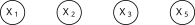
Rete bayesiana per \(4\) variabili indipendenti
Si consideri una variabile aleatoria \(\Lambda\) tale che, condizionatamente ad essa, le variabili \(T_1\), …, \(T_k\) sono indipendenti (un esempio concreto è \(\Lambda= \lambda\) individua il parametro delle variabili \(T_i\) che hanno legge esponenziale). La densità congiunta ha la forma \[ P(\Lambda, T_1, T_2, T_3, T_4) = P(\Lambda) P(T_1|\Lambda) P(T_2|\Lambda) P(T_3|\Lambda)P(T_4|\Lambda).\] La rete bayesiana costruita inserendo prima la variabile \(\Lambda\) e poi le rimanenti è rappresentata in figura.
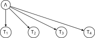
Rete bayesiana per \(4\) variabili \(T_1\), \(T_2\), \(T_3\), \(T_4\) condizionatamente indipendenti rispetto alla variabile \(\Lambda\)
Si considerino \(k\) variabili \(X_1\), …, \(X_k\) indipendenti tra loro (rispetto all’informazione iniziale) e sia \(Y = g(X_1, \ldots, X_k)\) (ad esempio \(Y = X_1+\ldots+X_k\) nel caso di variabili a valori in \(\R\)). La rete bayesiana è rappresentata in figura.
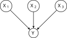
Rete bayesiana per \(4\) variabili \(X_1\), \(X_2\), \(X_3\) e \(Y = g(X_1, X_2, X_3)\)
Il grafo così ottenuto è privo di cicli (ossia percorrendo un qualsiasi cammino seguendo gli archi con la loro orientazione non si torna mai al punto di partenza). Si può pensare ad essa come ad una sorta di “albero genealogico” delle variabili aleatorie, in cui ogni variabile ha dei “genitori”, ossia quelle corrispondenti ai nodi che puntano direttamente ad esso, e dei “figli”, ossia quelle corrispondenti ai nodi cui punta direttamente.
Seguendo la costruzione della rete bayesiana, è quindi possibile ricavare da essa seguente formula per la “struttura” della legge congiunta (supponendo tutte le variabili discrete) \[ P(X_1=x_1, \ldots X_k= x_k|I) = \prod_{i=1}^k P(X_i =x_i | I, X_j=x_j \text{ per ogni $X_j$ "genitore" di $i$}).\]
Più in generale, si può pensare che ogni variabile abbia degli “antenati”, ossia tutti i nodi da cui parte un cammino (che segua le frecce) che termina nella variabile, e una “discendenza”, data da tutti i nodi invece che si ottengono seguendo un cammino partendo da esso (sempre seguendo le frecce).
Anche se non sono direttamente collegate da un arco, due variabili in una rete bayesiana possono essere non indipendenti (nel senso probabilistico) e in generale lo sono se una è nella discendenza dell’altra. Tuttavia, per ciascuna componente connessa del grafo, si può definire la variabile congiunta associata ai nodi della componente. Le variabili così ottenute sono tra loro indipendenti (rispetto all’informazione nota \(I\)).
Dalla rete bayesiana in figura si deduce che le variabili congiunte \(Y_1 = (X_1,X_2,X_3)\) e \(Y_2 =(X_4,X_5)\) sono indipendenti. Come conseguenza, ciascuna delle \(X_1\), \(X_2\), \(X_3\) è indipendente da \(X_4\) oppure da \(X_5\). Questo si può osservare direttamente dalla densità congiunta (supponiamo per semplicità che siano discrete), che dalla rete si deduce essere della forma \[ \begin{split}& P(X_1=x_1, X_2=x_2, X_3=x_3, X_4=x_4, X_5=x_5) \\
& = P(X_1= x_1) P(X_2 = x_2 | X_1= x_1) P(X_3=x_3|X_1=x_1, X_2=x_2) \cdot \\
& \quad \cdot P(X_4=x_4)P(X_5=x_5|X_4=x_4).\end{split}\]
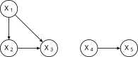
Rete bayesiana per \(5\) variabili, con due componenti connesse (e quindi due variabili congiunte indipendenti)
In generale, se arriva nuova informazione, la rete andrebbe ricostruita, ma vi è una eccezione importante, ossia quando si condiziona ulteriormente ad una informazione del tipo \[ \cur{ X_j = x_j}_{i \in J}\] per qualche sottoinsieme di variabili5. Per costruire la rete bayesiana associata alla nuova informazione, è sufficiente rimuovere dal grafo i nodi corrispondenti alle variabili \(X_j\), e tutti gli archi da essi uscenti (che puntano ai “figli” di \(X_j\)). Gli archi entranti in ciascun nodo corrispondente ad \(X_j\) invece vanno sostituiti con archi che collegano tra loro tutti i nodi da cui partivano (ossia i “genitori” di \(X_j\)), orientandoli secondo l’ordinamento fissato sulle variabili (questo serve anche a evitare che vi siano cicli nella rete bayesiana). Dopo questa trasformazione, possiamo ricordare che a ciascuna componente connessa corrisponde una variabile congiunta, e che le variabili associate a componenti diverse sono indipendenti (rispetto alla informazione \(I\) e \(\cur{ X_j = x_j}_{i \in J}\)).
Si considerino le variabili dell’Esempio ?exm-rete_bayes_lambda_T e si condizioni rispetto alla variabile \(\Lambda\). Le variabili \(T_1\), \(T_2\), \(T_3\), \(T_4\) diventano tra loro indipendenti, e la rete bayesiana è ottenuta semplicemente rimuovendo il nodo relativo a \(\Lambda\) e tutti gli archi da esso uscenti.
Condizionando rispetto a \(\Lambda\) si trova la rete con il nodo rimosso.
Si consideri invece la rete Bayesiana dell’esempio ?exm-rete_bayesiana_X_gX. Condizionando rispetto ad \(Y=g(X_1, X_2, X_3)\), per ottenere la nuova rete dobbiamo collegare tra loro tutti i nodi dei “genitori” di \(Y\), ossia \(X_1\), \(X_2\), \(X_3\) (lo facciamo nell’ordine naturale per evitare cicli). Intuitivamente è chiaro che, se conosciamo \(Y\), ad esempio nel caso \(Y = X_1+X_2+X_3\), le variabili saranno tutt’altro che indipendenti.
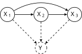
La rimozione di \(Y\) induce nuovi archi tra le \(X_i\)
Si consideri la rete bayesiana rappresentata in figura. Condizionando rispetto ad \(Y\), si ottiene che \(X\) e \(Z\) sono indipendenti. Rivedremo nel Capitolo Capitolo 6 questa rete come un semplice esempio di catena di Markov.
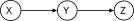
Le variabili \(X\) e \(Z\) sono condizionatamente indipendenti sapendo \(Y\).
A partire da una rete bayesiana, è quindi possibile ottenere la rete condizionata all’informazione, \(\cur{X_j = x_j}_{j \in J}\), e quindi la densità congiunta delle variabili rimanenti.
3.7.1 Esercizi
A partire dalla rete bayesiana in figura, si ottengano le reti corrispondenti all’informazione condizionata a ciascun possibile sottoinsieme delle variabili e si discuta quali variabili sono condizionatamente indipendenti.
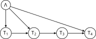
Rete bayesiana tra \(5\) variabili
3.8 Cenni ai metodi numerici
I risultati introdotti finora, riguardanti le variabili aleatorie, in particolare la formula di Bayes, permettono almeno in linea teorica di studiare in modo rigoroso moltissimi problemi concreti, in particolare qualora si possano ridurre a calcolare la densità (discreta o continua) di una variabile aleatoria \(Y\) (i “parametri” di un modello del problema), sulla base di informazione \(I\) inizialmente disponibile a cui si aggiunge un’informazione associata all’osservazione di una variabile \(X\) (i “dati” del modello), ovviamente rispetto alla quale \(Y\) non sia indipendente. Abbiamo infatti già visto diversi esempi in cui l’applicazione diretta della formula di Bayes (ad esempio, nel caso continuo) \[ p(Y = y | I, X=x) \propto p(Y=y|I) p( X=x| I, Y=y)\] permette di giustificare risultati riguardanti semplici situazioni, come ad esempio nel modello delle estrazioni dall’urna, in cui i “parametri” sono quantità relative allo stato dell’urna e i “dati” provengono dalle osservazioni delle estrazioni.
Dovrebbe anche essere evidente dagli stessi esempi che i metodi che abbiamo introdotto, sono generalizzabili in linea teorica a modelli arbitrariamente complessi: si pensi ad una rete bayesiana con tantissimi nodi e connessioni, in cui “dati” osservati \(X\) corrispondono alla variabile congiunta associata ad una famiglia di nodi, e si chiede di determinare la densità dei “parametri” \(Y\), la congiunta associata ai nodi rimanenti. Al crescere della numerosità dei dati e dei parametri, ci si scontra tuttavia con il problema di calcolare o almeno approssimare in modo computazionalmente efficiente una densità congiunta in uno spazio \(\R^d\) di dimensione estremamente elevata (diciamo dell’ordine dei parametri). Anche limitandosi alla stima di massimo a posteriori (o quella di massima verosimiglianza) \(y_{\mle}\), che fornisce comunque una informazione utile su \(Y\), si incontra il problema di massimizzare una funzione di \(y\), quindi di nuovo in uno spazio \(\R^d\) di dimensione molto elevata. Anche la numerosità dei dati \(X=x\) diventa problematica, ossia se \(X \in \R^D\) con \(D\) estremamente grande: diventa praticamente impossibile anche solo “definire” analiticamente la funzione di verosimiglianza \(p(X=x| I, Y=y)\), e quindi operare su di essa (ad esempio trovare la stima di massima verosimiglianza).
Questo problema era evidente ancor di più prima dell’uso dei computer, e classicamente era affrontato introducendo particolari densità a priori, in base alle specifiche funzioni di verosimiglianza in un problema, in modo che i calcoli delle densità a posteriori fossero analiticamente trattabili. Tali scelte speciali di densità a priori sono dette coniugate6 e sono ancora utili come particolari esempi e per situazioni semplici, ma limitano molto l’applicabilità del metodo. Inoltre non risolvono il problema quando comunque la numerosità delle osservazioni \(X\) diventa intrattabile.
In \(n\) esperimenti indipendenti, ciascuno con probabilità di successo \(Y =y\in (0,1)\), il numero \(X\) di successi ha una densità binomiale di parametri \((n,y)\), pertanto se si è interessati a stimare \(Y\) dalle osservazioni di \(X\), la verosimiglianza è \[ L(Y = y; X =k) = P(X=k | Y = y) = {n \choose k} y^k (1-y)^{n-k}.\] Se la densità di \(Y\) a priori è della famiglia Beta di parametri \(\alpha\), \(\beta>0\), ossia \[ p( Y = y) \propto y^{\alpha-1} (1-y)^{\beta-1},\] (per \(y \in (0,1)\) e zero altrimenti) allora la densità a posteriori avendo osservato \(X=k\) successi è ancora dello stesso tipo, con parametri \(\alpha+k\), \(\beta+n-k\), \[ p(Y= y| X=k) \propto y^{\alpha+k-1} (1-y)^{\beta+n-k-1}.\]
Negli anni sono state introdotte e perfezionate molteplici tecniche numeriche che cercano di superare queste difficoltà, e la ricerca in questo ambito è estremamente attuale e rilevante. Volendo quindi accennare ad alcuni degli approcci principali, essi si possono dividere in due gruppi, secondo l’obiettivo che si pongono: approssimare tutta la densità a posteriori di \(Y\), oppure determinarne solamente la stima di massima verosimiglianza \(y_{\mle}\) (o di massimo a posteriori).
Nel primo caso, il problema consiste nell’approssimare una densità (di solito continua) in uno spazio di dimensione alta (anche la variante discreta comunque è importante, qualora si voglia ridurre la numerosità dei possibili valori). Negli esempi che abbiamo considerato, ci siamo limitati ad approssimare la densità valutandola in una griglia di punti equispaziati. È evidente tuttavia che questa scelta non è ottimale: vi sono regioni dove la densità è bassa e quindi sono poco rilevanti per l’approssimazione, mentre dove la densità è alta dovremmo viceversa infittire la griglia. In generale, il problema di approssimare una densità continua con un’opportuna densità discreta è detto di quantizzazione, e vi sono diversi algoritmi per ottenere soluzioni in modo efficace. Uno molto popolare nell’ambito della statistica bayesiana è il cosiddetto metodo Monte Carlo (più precisamente i metodi Markov chain Monte Carlo MCMC) in cui si “simulano” al computer un gran numero di variabili aleatorie indipendenti tutte con stessa densità (quella da approssimare). I valori ottenuti da tali simulazioni sostituiscono quindi la griglia di punti equispaziati. Questo fatto è una conseguenza dell’intepretazione della probabilità come frequenza (la legge dei grandi numeri), che dal punto di vista matematico è un teorema come vedremo nel Capitolo Capitolo 8.
Osservazione. In R vi sono diverse librerie dedicate ai metodi Monte Carlo con applicazioni alla statistica bayesiana per l’approsimazione delle densità a posteriori. Due sono JAGS e Stan (che poi sono dei veri e propri linguaggi a sé, quindi non per ragioni di tempo non li illustreremo).
Nel secondo caso, ossia la determinazione della stima di massima verosimiglianza \(y_{\mle}\), si ricade in un contesto più ampio che è quello dell’ottimizzazione, ossia la determinazione di punti (e valori) di massimo o minimo di funzioni. Vi sono tantissimi algoritmi generali, molti dei quali sfruttano il calcolo in più variabili (nel caso appunto in cui \(Y \in \R^d\)), come ad esempio quelli di ascesa gradiente (o discesa se l’obiettivo è un minimo invece di un massimo). Qui l’idea di base è di avvicinarsi a \(y_{\mle}\) compiendo dei piccoli “passi” in ogni punto verso la direzione in cui la funzione aumenta maggiormente (appunto data dal gradiente della funzione nel punto). Il problema principale qui è che la “passeggiata” si potrebbe bloccare in un massimo locale (e non globale). Vi sono diversi metodi generali, spesso “probabilistici” come il simulated annealing che cercano di risolvere questa difficoltà.
In R le funzioni nlm() e optim() permettono di usare diversi metodi per l’ottimizzazione di funzioni (ossia la determinazione di minimi o massimi). Vediamo un esempio di applicazione.
Consideriamo le densità dell’Esempio ?exm-bayes-continuo. Usando il comando optim() determiniamo numericamente la stima di massmia verosimiglianza per la frazione di palline rosse.
# Per determinare numericamente la stima di massima verosmiglianza definiamo come funzione da minimizzare l'opposto del logaritmo della verosimiglianza:log_likelihood =function(x){-log( dbinom(3, 10, x) )}# determiniamone il punto di minimo la funzione optim(), specificando un valore iniziale 1/2 per il metodo iterativo e un intervallo di valori deltax,1 -deltax.deltax=0.01plot(seq(0,1, deltax), log_likelihood(seq(0,1, deltax)), col=miei_colori[1], lwd=3, type='l', xlab='-log(L)', ylab='')
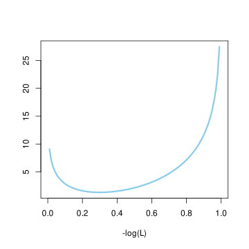
x_mle =optim( 1/2, log_likelihood, method="L-BFGS-B", lower=deltax, upper =1-deltax)#il parametro trovato dal metodo èx_mle$par
[1] 0.3000006
# da confrontare con quello teorico 3/10
Concludiamo notando che vi sono anche casi di metodi “misti”. Spesso la variabile \(Y\) è interpretata come una variabile congiunta \[Y = (Y_{\operatorname{par}}, Y_{\operatorname{hid}}),\] in cui la prima marginale sono propriamente i “parametri” che si vogliono stimare, mentre la seconda sono variabili “nascoste” (in inglese latent variables) che non interessano direttamente (ma neppure sono i dati osservati \(X\)). La formula per la densità della marginale diventa in questo caso \[ p(Y_{\operatorname{par}} = y | I, X=x)= \int p(Y_{\operatorname{par}} = y | I, X=x, Y_{\operatorname{hid}} =z) p(Y_{\operatorname{hid}} = z | I, X=x) dz,\] dove l’integrale si estende a tutti i possibili valori delle variabili nascoste, possibilmente di dimensione molto grande. Inoltre la formula sopra richiede di calcolare (o almeno stimare) la densità a posteriori delle variabili nascoste. Per superare queste difficoltà è possibile limitarsi alla determinazione della stima di massima verosimiglianza per i parametri (quindi di \(Y_{\operatorname{par}}\)) utilizzando algoritmi che “alternano” l’uso di metodi del primo caso con metodi del secondo caso (il più popolare tra questi è l’algoritmo EM).
3.8.1 Esercizi
Usare la funzione rbinom() per simulare una variabile avente densità binomiale. Osservare che la frequenza dei valori osservati tende alla probabilità per un grande numero di simulazioni.
Usare la funzione optim() per calcolare numericamente \[ \arg \min \cur{ (x-1)^2 + (y-2)^2 - xy : (x,y ) \in \R^2}.\]
3.9 Problemi
Si considerino \(10\) variabili aleatorie \(X_1\), …, \(X_{10}\) indipendenti tra loro, tutte con densità continua uniforme su un intervallo \([a,b] \subseteq \R\). Si ponga \(X=(X_1, X_2, \ldots, X_{10})\).
Supponendo che \(a\), \(b\) non siano noti, si determinino le stime di massima verosimiglianza \(a_{\mle}\), \(b_{\mle}\) avendo osservato dei valori \(X=(x_1, \ldots, x_{10})\).
Supponendo invece che \(a=0\) sia noto, si ponga invece \(B=b\) una variabile aleatoria a priori (ossia prima di osservare le \(X_i\)) anch’essa uniforme su un intervallo \([0,10]\). Si osservano poi i valori \[ X=(1,3,5,6,3,3,5,8,7,1),\] determinare la densità di \(B\) a posteriori.
Un’urna contiene una frazione \(X\) di palline rosse (le rimanenti sono blu), e si suppone inizialmente che \(X\) sia distribuita uniformemente su \([0,1]\). Si effettuano poi estrazioni con rimpiazzo dall’urna.
Avendo osservato in \(n\) estrazioni una precisa sequenza contenente \(r\) palline rosse e le rimanenti \(n-r\) blu, scrivere la densità a posteriori di \(X\) e calcolare la stima di massimo a posteriori.
Dopo aver osservato \(n\) estrazioni di cui \(r\) palline rosse, calcolare la probabilità che all’estrazione \(n+1\) si estragga una pallina rossa.
Si considerino due variabili \(X_1\), \(X_2\) indipendenti aventi legge Poisson di parametri \(\lambda_1= 10\), \(\lambda_2=3\). Supponendo di osservare che \(X_1+X_2=12\) determinare la densità di \(X_1\) e calcolare la stima di massimo a posteriori.
Un segnale è trasmesso tramite una stringa di bit (ossia cifre binarie \(0\) oppure \(1\)) attraverso un canale di comunicazione. Ciascuna cifra trasmessa è affetta da un rumore che ha il seguente effetto: se si trasmette \(0\), allora si riceve \(1\) con probabilità \(f_0\), se si trasmette \(1\) allora si riceve \(0\) con probabilità \(f_1\). Tutto ciò avviene per ciascuna cifra trasmessa, indipendentemente dalle altre. I parametri \(f_0\) ed \(f_1\) non sono completamente noti, ma hanno densità continue a priori \[ P( F_0 = f_0 ) \propto f_0(1-f_0)^{9}, \quad P( F_1 = f_1 ) \propto f_1^4(1-f_1)^{6}.\] Prima di trasmettere il segnale, che consiste di un solo bit, ci si è accordati nel trasmettere una sequenza di controllo che consiste di \(10\) zeri ripetuti seguiti da \(10\) uno ripetuti, in modo da rendersi conto se il rumore è eccessivo. Dal punto di vista del ricevente, il segnale consiste in un bit casuale con probabilità uniforme.
Supponendo che il ricevente trascuri completamente la sequenza di controllo, calcolare la probabilità che riceva il segnale correttamente.
Supponendo che invece il ricevente ottenga nella sequenza di controllo \(10\) zeri seguiti da \(5\) uno e altri \(5\) zeri, come cambia la probabilità che riceva il segnale correttamente?
è tradizione indicare con lettere maiuscole \(X\), \(Y\), \(Z\), \(T\) ecc. le grandezze e con le rispettive lettere minuscole \(x\), \(y\), \(z\), \(t\) i possibili valori↩︎
il concetto propriamente matematico è infiniti numerabili↩︎
o funzione di massa di probabilità, in inglese probability mass function, abbreviato con pmf↩︎
o funzione di densità di probabilità, in inglese probability density function, abbreviato pdf↩︎
attenzione: è importante che l’informazione riguardi la conoscenza esatta del valore delle \(X_j\), ossia \(X_j = x_j\), e non eventi del tipo \(X_j \in U_j\), altrimenti il discorso non vale.↩︎